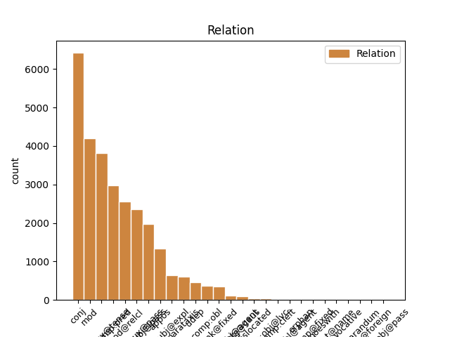
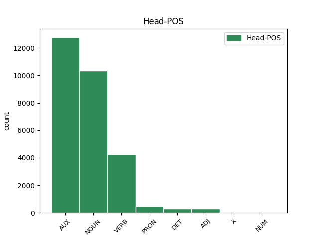
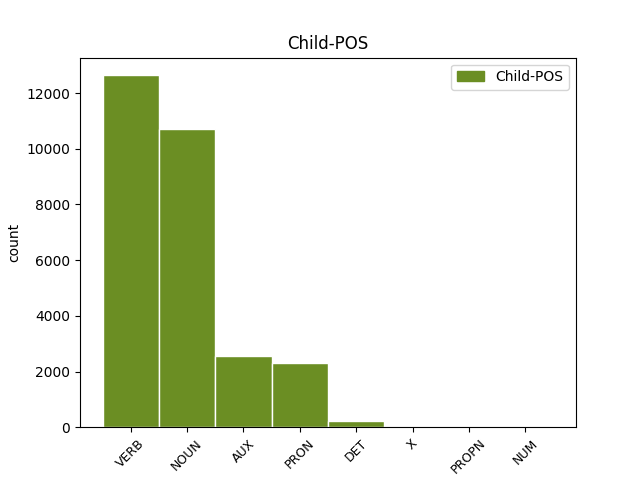

Distribution of features within this leaf



Agreement Rules sorted by frequency.
- When the dependent token is the modifer(mod) of the head token, and the dependent token is VERB.
1 La _ _ _ _ 0 _ _ _
2 population _ _ _ _ 0 _ _ _
3 est _ _ _ _ 0 _ _ _
4 alors _ _ _ _ 0 _ _ _
5 indigène _ _ _ _ 0 _ _ _
6 et _ _ _ _ 0 _ _ _
7 fait _ _ _ _ 0 _ _ _
8 partie _ _ _ _ 0 _ _ _
9 de _ _ _ _ 0 _ _ _
10 les _ _ _ _ 0 _ _ _
11 Nearchi _ _ _ _ 0 _ _ _
12 , _ _ _ _ 0 _ _ _
13 peuple peuple NOUN _ Gender=Masc|Number=Sing 0 _ _ _
14 établi établir VERB _ Gender=Masc|Number=Sing|Tense=Past|VerbForm=Part 13 mod _ _
15 sur _ _ _ _ 0 _ _ _
16 une _ _ _ _ 0 _ _ _
17 partie _ _ _ _ 0 _ _ _
18 de _ _ _ _ 0 _ _ _
19 la _ _ _ _ 0 _ _ _
20 Crau _ _ _ _ 0 _ _ _
21 et _ _ _ _ 0 _ _ _
22 de _ _ _ _ 0 _ _ _
23 les _ _ _ _ 0 _ _ _
24 Alpilles _ _ _ _ 0 _ _ _
25 . _ _ _ _ 0 _ _ _
1 Selon _ _ _ _ 0 _ _ _
2 une _ _ _ _ 0 _ _ _
3 première _ _ _ _ 0 _ _ _
4 hypothèse _ _ _ _ 0 _ _ _
5 , _ _ _ _ 0 _ _ _
6 l' _ _ _ _ 0 _ _ _
7 origine _ _ _ _ 0 _ _ _
8 est _ _ _ _ 0 _ _ _
9 issue _ _ _ _ 0 _ _ _
10 de _ _ _ _ 0 _ _ _
11 l' _ _ _ _ 0 _ _ _
12 appelatif _ _ _ _ 0 _ _ _
13 gaulois _ _ _ _ 0 _ _ _
14 alpe _ _ _ _ 0 _ _ _
15 , _ _ _ _ 0 _ _ _
16 lui-même _ _ _ _ 0 _ _ _
17 issu _ _ _ _ 0 _ _ _
18 d' _ _ _ _ 0 _ _ _
19 une _ _ _ _ 0 _ _ _
20 racine _ _ _ _ 0 _ _ _
21 celtique _ _ _ _ 0 _ _ _
22 ou _ _ _ _ 0 _ _ _
23 pré-celtique _ _ _ _ 0 _ _ _
24 alp _ _ _ _ 0 _ _ _
25 qui _ _ _ _ 0 _ _ _
26 viendrait _ _ _ _ 0 _ _ _
27 dalbos _ _ _ _ 0 _ _ _
28 signifiant _ _ _ _ 0 _ _ _
29 selon _ _ _ _ 0 _ _ _
30 Delamarre _ _ _ _ 0 _ _ _
31 « _ _ _ _ 0 _ _ _
32 le _ _ _ _ 0 _ _ _
33 monde monde NOUN _ Gender=Masc|Number=Sing 0 _ _ _
34 lumineux _ _ _ _ 0 _ _ _
35 , _ _ _ _ 0 _ _ _
36 le _ _ _ _ 0 _ _ _
37 monde monde NOUN _ Gender=Masc|Number=Sing 33 conj _ _
38 d' _ _ _ _ 0 _ _ _
39 en _ _ _ _ 0 _ _ _
40 haut _ _ _ _ 0 _ _ _
41 » _ _ _ _ 0 _ _ _
42 . _ _ _ _ 0 _ _ _
1 Marco _ _ _ _ 0 _ _ _
2 Galiazzo _ _ _ _ 0 _ _ _
3 ( _ _ _ _ 0 _ _ _
4 né _ _ _ _ 0 _ _ _
5 le _ _ _ _ 0 _ _ _
6 7 _ _ _ _ 0 _ _ _
7 mai _ _ _ _ 0 _ _ _
8 1983 _ _ _ _ 0 _ _ _
9 à _ _ _ _ 0 _ _ _
10 Padoue _ _ _ _ 0 _ _ _
11 , _ _ _ _ 0 _ _ _
12 en _ _ _ _ 0 _ _ _
13 Vénétie _ _ _ _ 0 _ _ _
14 ) _ _ _ _ 0 _ _ _
15 est être AUX _ Mood=Ind|Number=Sing|Person=3|Tense=Pres|VerbForm=Fin 0 _ _ _
16 un _ _ _ _ 0 _ _ _
17 athlète athlète NOUN _ Gender=Masc|Number=Sing 15 comp:pred _ _
18 italien _ _ _ _ 0 _ _ _
19 , _ _ _ _ 0 _ _ _
20 spécialiste _ _ _ _ 0 _ _ _
21 de _ _ _ _ 0 _ _ _
22 le _ _ _ _ 0 _ _ _
23 tir _ _ _ _ 0 _ _ _
24 à _ _ _ _ 0 _ _ _
25 l' _ _ _ _ 0 _ _ _
26 arc _ _ _ _ 0 _ _ _
27 . _ _ _ _ 0 _ _ _
1 Ce _ _ _ _ 0 _ _ _
2 débutant _ _ _ _ 0 _ _ _
3 de _ _ _ _ 0 _ _ _
4 l' _ _ _ _ 0 _ _ _
5 année _ _ _ _ 0 _ _ _
6 1983 _ _ _ _ 0 _ _ _
7 et _ _ _ _ 0 _ _ _
8 double _ _ _ _ 0 _ _ _
9 All-Star _ _ _ _ 0 _ _ _
10 a avoir AUX _ Mood=Ind|Number=Sing|Person=3|Tense=Pres|VerbForm=Fin 0 _ _ _
11 effectué effectuer VERB _ Gender=Masc|Number=Sing|Tense=Past|VerbForm=Part 10 comp:aux@tense _ _
12 7 _ _ _ _ 0 _ _ _
13 saisons _ _ _ _ 0 _ _ _
14 à _ _ _ _ 0 _ _ _
15 plus _ _ _ _ 0 _ _ _
16 de _ _ _ _ 0 _ _ _
17 20 _ _ _ _ 0 _ _ _
18 points _ _ _ _ 0 _ _ _
19 de _ _ _ _ 0 _ _ _
20 moyenne _ _ _ _ 0 _ _ _
21 par _ _ _ _ 0 _ _ _
22 match _ _ _ _ 0 _ _ _
23 et _ _ _ _ 0 _ _ _
24 fait _ _ _ _ 0 _ _ _
25 encore _ _ _ _ 0 _ _ _
26 aujourd'hui _ _ _ _ 0 _ _ _
27 partie _ _ _ _ 0 _ _ _
28 de _ _ _ _ 0 _ _ _
29 la _ _ _ _ 0 _ _ _
30 liste _ _ _ _ 0 _ _ _
31 de _ _ _ _ 0 _ _ _
32 les _ _ _ _ 0 _ _ _
33 50 _ _ _ _ 0 _ _ _
34 joueurs _ _ _ _ 0 _ _ _
35 les _ _ _ _ 0 _ _ _
36 plus _ _ _ _ 0 _ _ _
37 prolifiques _ _ _ _ 0 _ _ _
38 de _ _ _ _ 0 _ _ _
39 l' _ _ _ _ 0 _ _ _
40 histoire _ _ _ _ 0 _ _ _
41 de _ _ _ _ 0 _ _ _
42 la _ _ _ _ 0 _ _ _
43 ligue _ _ _ _ 0 _ _ _
44 ( _ _ _ _ 0 _ _ _
45 il _ _ _ _ 0 _ _ _
46 était _ _ _ _ 0 _ _ _
47 en _ _ _ _ 0 _ _ _
48 31 _ _ _ _ 0 _ _ _
49 position _ _ _ _ 0 _ _ _
50 à _ _ _ _ 0 _ _ _
51 le _ _ _ _ 0 _ _ _
52 moment _ _ _ _ 0 _ _ _
53 de _ _ _ _ 0 _ _ _
54 sa _ _ _ _ 0 _ _ _
55 retraite _ _ _ _ 0 _ _ _
56 sportive _ _ _ _ 0 _ _ _
57 ) _ _ _ _ 0 _ _ _
58 . _ _ _ _ 0 _ _ _
1 Depuis _ _ _ _ 0 _ _ _
2 la _ _ _ _ 0 _ _ _
3 fin _ _ _ _ 0 _ _ _
4 de _ _ _ _ 0 _ _ _
5 le _ _ _ _ 0 _ _ _
6 XIXe _ _ _ _ 0 _ _ _
7 siècle _ _ _ _ 0 _ _ _
8 et _ _ _ _ 0 _ _ _
9 l' _ _ _ _ 0 _ _ _
10 époque _ _ _ _ 0 _ _ _
11 de _ _ _ _ 0 _ _ _
12 Wilhelm _ _ _ _ 0 _ _ _
13 von _ _ _ _ 0 _ _ _
14 Bode _ _ _ _ 0 _ _ _
15 , _ _ _ _ 0 _ _ _
16 le _ _ _ _ 0 _ _ _
17 musée _ _ _ _ 0 _ _ _
18 est être AUX _ Mood=Ind|Number=Sing|Person=3|Tense=Pres|VerbForm=Fin 0 _ _ _
19 installé installer VERB _ Gender=Masc|Number=Sing|Tense=Past|VerbForm=Part 18 comp:aux@pass _ _
20 dans _ _ _ _ 0 _ _ _
21 le _ _ _ _ 0 _ _ _
22 sous-sol _ _ _ _ 0 _ _ _
23 de _ _ _ _ 0 _ _ _
24 le _ _ _ _ 0 _ _ _
25 Palais _ _ _ _ 0 _ _ _
26 de _ _ _ _ 0 _ _ _
27 les _ _ _ _ 0 _ _ _
28 Rohan _ _ _ _ 0 _ _ _
29 . _ _ _ _ 0 _ _ _
1 La _ _ _ _ 0 _ _ _
2 population _ _ _ _ 0 _ _ _
3 est être AUX _ Mood=Ind|Number=Sing|Person=3|Tense=Pres|VerbForm=Fin 0 _ _ _
4 alors _ _ _ _ 0 _ _ _
5 indigène _ _ _ _ 0 _ _ _
6 et _ _ _ _ 0 _ _ _
7 fait faire VERB _ Mood=Ind|Number=Sing|Person=3|Tense=Pres|VerbForm=Fin 3 conj _ _
8 partie _ _ _ _ 0 _ _ _
9 de _ _ _ _ 0 _ _ _
10 les _ _ _ _ 0 _ _ _
11 Nearchi _ _ _ _ 0 _ _ _
12 , _ _ _ _ 0 _ _ _
13 peuple _ _ _ _ 0 _ _ _
14 établi _ _ _ _ 0 _ _ _
15 sur _ _ _ _ 0 _ _ _
16 une _ _ _ _ 0 _ _ _
17 partie _ _ _ _ 0 _ _ _
18 de _ _ _ _ 0 _ _ _
19 la _ _ _ _ 0 _ _ _
20 Crau _ _ _ _ 0 _ _ _
21 et _ _ _ _ 0 _ _ _
22 de _ _ _ _ 0 _ _ _
23 les _ _ _ _ 0 _ _ _
24 Alpilles _ _ _ _ 0 _ _ _
25 . _ _ _ _ 0 _ _ _
1 Selon _ _ _ _ 0 _ _ _
2 une _ _ _ _ 0 _ _ _
3 première _ _ _ _ 0 _ _ _
4 hypothèse _ _ _ _ 0 _ _ _
5 , _ _ _ _ 0 _ _ _
6 l' _ _ _ _ 0 _ _ _
7 origine _ _ _ _ 0 _ _ _
8 est _ _ _ _ 0 _ _ _
9 issue _ _ _ _ 0 _ _ _
10 de _ _ _ _ 0 _ _ _
11 l' _ _ _ _ 0 _ _ _
12 appelatif _ _ _ _ 0 _ _ _
13 gaulois _ _ _ _ 0 _ _ _
14 alpe _ _ _ _ 0 _ _ _
15 , _ _ _ _ 0 _ _ _
16 lui-même _ _ _ _ 0 _ _ _
17 issu _ _ _ _ 0 _ _ _
18 d' _ _ _ _ 0 _ _ _
19 une _ _ _ _ 0 _ _ _
20 racine racine NOUN _ Gender=Fem|Number=Sing 0 _ _ _
21 celtique _ _ _ _ 0 _ _ _
22 ou _ _ _ _ 0 _ _ _
23 pré-celtique _ _ _ _ 0 _ _ _
24 alp _ _ _ _ 0 _ _ _
25 qui _ _ _ _ 0 _ _ _
26 viendrait venir VERB _ Mood=Cnd|Number=Sing|Person=3|Tense=Pres|VerbForm=Fin 20 mod@relcl _ _
27 dalbos _ _ _ _ 0 _ _ _
28 signifiant _ _ _ _ 0 _ _ _
29 selon _ _ _ _ 0 _ _ _
30 Delamarre _ _ _ _ 0 _ _ _
31 « _ _ _ _ 0 _ _ _
32 le _ _ _ _ 0 _ _ _
33 monde _ _ _ _ 0 _ _ _
34 lumineux _ _ _ _ 0 _ _ _
35 , _ _ _ _ 0 _ _ _
36 le _ _ _ _ 0 _ _ _
37 monde _ _ _ _ 0 _ _ _
38 d' _ _ _ _ 0 _ _ _
39 en _ _ _ _ 0 _ _ _
40 haut _ _ _ _ 0 _ _ _
41 » _ _ _ _ 0 _ _ _
42 . _ _ _ _ 0 _ _ _
1 Depuis _ _ _ _ 0 _ _ _
2 la _ _ _ _ 0 _ _ _
3 fin _ _ _ _ 0 _ _ _
4 de _ _ _ _ 0 _ _ _
5 le _ _ _ _ 0 _ _ _
6 XIXe _ _ _ _ 0 _ _ _
7 siècle _ _ _ _ 0 _ _ _
8 et _ _ _ _ 0 _ _ _
9 l' _ _ _ _ 0 _ _ _
10 époque _ _ _ _ 0 _ _ _
11 de _ _ _ _ 0 _ _ _
12 Wilhelm _ _ _ _ 0 _ _ _
13 von _ _ _ _ 0 _ _ _
14 Bode _ _ _ _ 0 _ _ _
15 , _ _ _ _ 0 _ _ _
16 le _ _ _ _ 0 _ _ _
17 musée musée NOUN _ Gender=Masc|Number=Sing 18 subj@pass _ _
18 est être AUX _ Mood=Ind|Number=Sing|Person=3|Tense=Pres|VerbForm=Fin 0 _ _ _
19 installé _ _ _ _ 0 _ _ _
20 dans _ _ _ _ 0 _ _ _
21 le _ _ _ _ 0 _ _ _
22 sous-sol _ _ _ _ 0 _ _ _
23 de _ _ _ _ 0 _ _ _
24 le _ _ _ _ 0 _ _ _
25 Palais _ _ _ _ 0 _ _ _
26 de _ _ _ _ 0 _ _ _
27 les _ _ _ _ 0 _ _ _
28 Rohan _ _ _ _ 0 _ _ _
29 . _ _ _ _ 0 _ _ _
1 Marco _ _ _ _ 0 _ _ _
2 Galiazzo _ _ _ _ 0 _ _ _
3 ( _ _ _ _ 0 _ _ _
4 né _ _ _ _ 0 _ _ _
5 le _ _ _ _ 0 _ _ _
6 7 _ _ _ _ 0 _ _ _
7 mai _ _ _ _ 0 _ _ _
8 1983 _ _ _ _ 0 _ _ _
9 à _ _ _ _ 0 _ _ _
10 Padoue _ _ _ _ 0 _ _ _
11 , _ _ _ _ 0 _ _ _
12 en _ _ _ _ 0 _ _ _
13 Vénétie _ _ _ _ 0 _ _ _
14 ) _ _ _ _ 0 _ _ _
15 est _ _ _ _ 0 _ _ _
16 un _ _ _ _ 0 _ _ _
17 athlète athlète NOUN _ Gender=Masc|Number=Sing 0 _ _ _
18 italien _ _ _ _ 0 _ _ _
19 , _ _ _ _ 0 _ _ _
20 spécialiste spécialiste NOUN _ Gender=Masc|Number=Sing 17 appos _ _
21 de _ _ _ _ 0 _ _ _
22 le _ _ _ _ 0 _ _ _
23 tir _ _ _ _ 0 _ _ _
24 à _ _ _ _ 0 _ _ _
25 l' _ _ _ _ 0 _ _ _
26 arc _ _ _ _ 0 _ _ _
27 . _ _ _ _ 0 _ _ _
1 Selon _ _ _ _ 0 _ _ _
2 une _ _ _ _ 0 _ _ _
3 première _ _ _ _ 0 _ _ _
4 hypothèse _ _ _ _ 0 _ _ _
5 , _ _ _ _ 0 _ _ _
6 l' _ _ _ _ 0 _ _ _
7 origine _ _ _ _ 0 _ _ _
8 est _ _ _ _ 0 _ _ _
9 issue _ _ _ _ 0 _ _ _
10 de _ _ _ _ 0 _ _ _
11 l' _ _ _ _ 0 _ _ _
12 appelatif appelatif NOUN _ Gender=Masc|Number=Sing 0 _ _ _
13 gaulois _ _ _ _ 0 _ _ _
14 alpe alpe NOUN _ Gender=Fem|Number=Sing 12 mod _ SpaceAfter=No
15 , _ _ _ _ 0 _ _ _
16 lui-même _ _ _ _ 0 _ _ _
17 issu _ _ _ _ 0 _ _ _
18 d' _ _ _ _ 0 _ _ _
19 une _ _ _ _ 0 _ _ _
20 racine _ _ _ _ 0 _ _ _
21 celtique _ _ _ _ 0 _ _ _
22 ou _ _ _ _ 0 _ _ _
23 pré-celtique _ _ _ _ 0 _ _ _
24 alp _ _ _ _ 0 _ _ _
25 qui _ _ _ _ 0 _ _ _
26 viendrait _ _ _ _ 0 _ _ _
27 dalbos _ _ _ _ 0 _ _ _
28 signifiant _ _ _ _ 0 _ _ _
29 selon _ _ _ _ 0 _ _ _
30 Delamarre _ _ _ _ 0 _ _ _
31 « _ _ _ _ 0 _ _ _
32 le _ _ _ _ 0 _ _ _
33 monde _ _ _ _ 0 _ _ _
34 lumineux _ _ _ _ 0 _ _ _
35 , _ _ _ _ 0 _ _ _
36 le _ _ _ _ 0 _ _ _
37 monde _ _ _ _ 0 _ _ _
38 d' _ _ _ _ 0 _ _ _
39 en _ _ _ _ 0 _ _ _
40 haut _ _ _ _ 0 _ _ _
41 » _ _ _ _ 0 _ _ _
42 . _ _ _ _ 0 _ _ _
1 Il il PRON _ Gender=Masc|Number=Sing|Person=3|PronType=Prs 2 subj@expl _ _
2 est être AUX _ Mood=Ind|Number=Sing|Person=3|Tense=Pres|VerbForm=Fin 0 _ _ _
3 probable _ _ _ _ 0 _ _ _
4 qu' _ _ _ _ 0 _ _ _
5 il _ _ _ _ 0 _ _ _
6 réussira _ _ _ _ 0 _ _ _
7 à _ _ _ _ 0 _ _ _
8 décrocher _ _ _ _ 0 _ _ _
9 la _ _ _ _ 0 _ _ _
10 majorité _ _ _ _ 0 _ _ _
11 relative _ _ _ _ 0 _ _ _
12 lors _ _ _ _ 0 _ _ _
13 de _ _ _ _ 0 _ _ _
14 les _ _ _ _ 0 _ _ _
15 législatives _ _ _ _ 0 _ _ _
16 de _ _ _ _ 0 _ _ _
17 2013 _ _ _ _ 0 _ _ _
18 . _ _ _ _ 0 _ _ _
1 Première _ _ _ _ 0 _ _ _
2 édition édition NOUN _ Gender=Fem|Number=Sing 0 _ _ _
3 de _ _ _ _ 0 _ _ _
4 la _ _ _ _ 0 _ _ _
5 coupe _ _ _ _ 0 _ _ _
6 Gordon-Bennett _ _ _ _ 0 _ _ _
7 , _ _ _ _ 0 _ _ _
8 dont _ _ _ _ 0 _ _ _
9 le _ _ _ _ 0 _ _ _
10 départ _ _ _ _ 0 _ _ _
11 est être AUX _ Mood=Ind|Number=Sing|Person=3|Tense=Pres|VerbForm=Fin 2 mod@relcl _ _
12 donné _ _ _ _ 0 _ _ _
13 le _ _ _ _ 0 _ _ _
14 14 _ _ _ _ 0 _ _ _
15 juin _ _ _ _ 0 _ _ _
16 . _ _ _ _ 0 _ _ _
1 Capitaine _ _ _ _ 0 _ _ _
2 , _ _ _ _ 0 _ _ _
3 il _ _ _ _ 0 _ _ _
4 commande commander VERB _ Mood=Ind|Number=Sing|Person=3|Tense=Pres|VerbForm=Fin 0 _ _ _
5 et _ _ _ _ 0 _ _ _
6 est être AUX _ Mood=Ind|Number=Sing|Person=3|Tense=Pres|VerbForm=Fin 4 conj _ _
7 tué _ _ _ _ 0 _ _ _
8 le _ _ _ _ 0 _ _ _
9 13 _ _ _ _ 0 _ _ _
10 septembre _ _ _ _ 0 _ _ _
11 1515 _ _ _ _ 0 _ _ _
12 à _ _ _ _ 0 _ _ _
13 la _ _ _ _ 0 _ _ _
14 tête _ _ _ _ 0 _ _ _
15 d' _ _ _ _ 0 _ _ _
16 une _ _ _ _ 0 _ _ _
17 compagnie _ _ _ _ 0 _ _ _
18 de _ _ _ _ 0 _ _ _
19 gendarmerie _ _ _ _ 0 _ _ _
20 à _ _ _ _ 0 _ _ _
21 la _ _ _ _ 0 _ _ _
22 bataille _ _ _ _ 0 _ _ _
23 de _ _ _ _ 0 _ _ _
24 Marignan _ _ _ _ 0 _ _ _
25 . _ _ _ _ 0 _ _ _
1 Le _ _ _ _ 0 _ _ _
2 comté _ _ _ _ 0 _ _ _
3 a avoir AUX _ Mood=Ind|Number=Sing|Person=3|Tense=Pres|VerbForm=Fin 0 _ _ _
4 été être AUX _ Gender=Masc|Number=Sing|Tense=Past|VerbForm=Part 3 comp:aux@tense _ _
5 fondé _ _ _ _ 0 _ _ _
6 en _ _ _ _ 0 _ _ _
7 1844 _ _ _ _ 0 _ _ _
8 et _ _ _ _ 0 _ _ _
9 doit _ _ _ _ 0 _ _ _
10 son _ _ _ _ 0 _ _ _
11 nom _ _ _ _ 0 _ _ _
12 à _ _ _ _ 0 _ _ _
13 Francis _ _ _ _ 0 _ _ _
14 Marion _ _ _ _ 0 _ _ _
15 , _ _ _ _ 0 _ _ _
16 général _ _ _ _ 0 _ _ _
17 américain _ _ _ _ 0 _ _ _
18 . _ _ _ _ 0 _ _ _
1 Il il PRON _ Gender=Masc|Number=Sing|Person=3|PronType=Prs 2 subj@pass _ _
2 fut être AUX _ Mood=Ind|Number=Sing|Person=3|Tense=Past|VerbForm=Fin 0 _ _ _
3 battu _ _ _ _ 0 _ _ _
4 par _ _ _ _ 0 _ _ _
5 son _ _ _ _ 0 _ _ _
6 rival _ _ _ _ 0 _ _ _
7 colorado _ _ _ _ 0 _ _ _
8 , _ _ _ _ 0 _ _ _
9 Julio _ _ _ _ 0 _ _ _
10 María _ _ _ _ 0 _ _ _
11 Sanguinetti _ _ _ _ 0 _ _ _
12 , _ _ _ _ 0 _ _ _
13 élu _ _ _ _ 0 _ _ _
14 président _ _ _ _ 0 _ _ _
15 , _ _ _ _ 0 _ _ _
16 ce _ _ _ _ 0 _ _ _
17 qui _ _ _ _ 0 _ _ _
18 mettait _ _ _ _ 0 _ _ _
19 fin _ _ _ _ 0 _ _ _
20 à _ _ _ _ 0 _ _ _
21 la _ _ _ _ 0 _ _ _
22 dictature _ _ _ _ 0 _ _ _
23 . _ _ _ _ 0 _ _ _
1 Nous _ _ _ _ 0 _ _ _
2 y _ _ _ _ 0 _ _ _
3 sommes être AUX _ Mood=Ind|Number=Plur|Person=1|Tense=Pres|VerbForm=Fin 0 _ _ _
4 allés _ _ _ _ 0 _ _ _
5 deux _ _ _ _ 0 _ _ _
6 fois fois NOUN _ Gender=Fem|Number=Plur 3 udep _ SpaceAfter=No
7 , _ _ _ _ 0 _ _ _
8 car _ _ _ _ 0 _ _ _
9 c' _ _ _ _ 0 _ _ _
10 est _ _ _ _ 0 _ _ _
11 un _ _ _ _ 0 _ _ _
12 de _ _ _ _ 0 _ _ _
13 les _ _ _ _ 0 _ _ _
14 seuls _ _ _ _ 0 _ _ _
15 restaurants _ _ _ _ 0 _ _ _
16 qui _ _ _ _ 0 _ _ _
17 sert _ _ _ _ 0 _ _ _
18 après _ _ _ _ 0 _ _ _
19 23h _ _ _ _ 0 _ _ _
20 à _ _ _ _ 0 _ _ _
21 Royan _ _ _ _ 0 _ _ _
22 . _ _ _ _ 0 _ _ _
1 La le DET _ Definite=Def|Gender=Fem|Number=Sing|PronType=Art 0 _ _ _
2 plupart plupart NOUN _ Gender=Fem|Number=Sing 1 unk@fixed _ _
3 de _ _ _ _ 0 _ _ _
4 les _ _ _ _ 0 _ _ _
5 pièces _ _ _ _ 0 _ _ _
6 de _ _ _ _ 0 _ _ _
7 Labiche _ _ _ _ 0 _ _ _
8 ont _ _ _ _ 0 _ _ _
9 été _ _ _ _ 0 _ _ _
10 publiées _ _ _ _ 0 _ _ _
11 de _ _ _ _ 0 _ _ _
12 façon _ _ _ _ 0 _ _ _
13 séparée _ _ _ _ 0 _ _ _
14 et _ _ _ _ 0 _ _ _
15 en _ _ _ _ 0 _ _ _
16 recueils _ _ _ _ 0 _ _ _
17 . _ _ _ _ 0 _ _ _
1 Selon _ _ _ _ 0 _ _ _
2 Elie _ _ _ _ 0 _ _ _
3 Wiesel _ _ _ _ 0 _ _ _
4 , _ _ _ _ 0 _ _ _
5 Jérôme _ _ _ _ 0 _ _ _
6 Lindon _ _ _ _ 0 _ _ _
7 eut _ _ _ _ 0 _ _ _
8 raison _ _ _ _ 0 _ _ _
9 d' _ _ _ _ 0 _ _ _
10 effectuer _ _ _ _ 0 _ _ _
11 ces _ _ _ _ 0 _ _ _
12 raccourcissements _ _ _ _ 0 _ _ _
13 et _ _ _ _ 0 _ _ _
14 remaniements _ _ _ _ 0 _ _ _
15 , _ _ _ _ 0 _ _ _
16 lui-même _ _ _ _ 0 _ _ _
17 « _ _ _ _ 0 _ _ _
18 redout _ _ _ _ 0 _ _ _
19 [ _ _ _ _ 0 _ _ _
20 ant _ _ _ _ 0 _ _ _
21 ] _ _ _ _ 0 _ _ _
22 tout _ _ _ _ 0 _ _ _
23 ce _ _ _ _ 0 _ _ _
24 qui _ _ _ _ 0 _ _ _
25 pouvait _ _ _ _ 0 _ _ _
26 paraître _ _ _ _ 0 _ _ _
27 superflu _ _ _ _ 0 _ _ _
28 » _ _ _ _ 0 _ _ _
29 : _ _ _ _ 0 _ _ _
30 « _ _ _ _ 0 _ _ _
31 raconter _ _ _ _ 0 _ _ _
32 trop _ _ _ _ 0 _ _ _
33 m' lui PRON _ Number=Sing|Person=1|PronType=Prs 34 comp:obl _ SpaceAfter=No
34 effrayait effrayer VERB _ Mood=Ind|Number=Sing|Person=3|Tense=Imp|VerbForm=Fin 0 _ _ _
35 plus _ _ _ _ 0 _ _ _
36 que _ _ _ _ 0 _ _ _
37 de _ _ _ _ 0 _ _ _
38 dire _ _ _ _ 0 _ _ _
39 moins _ _ _ _ 0 _ _ _
40 » _ _ _ _ 0 _ _ _
41 , _ _ _ _ 0 _ _ _
42 expliquerait _ _ _ _ 0 _ _ _
43 -il _ _ _ _ 0 _ _ _
44 dans _ _ _ _ 0 _ _ _
45 la _ _ _ _ 0 _ _ _
46 préface _ _ _ _ 0 _ _ _
47 à _ _ _ _ 0 _ _ _
48 l' _ _ _ _ 0 _ _ _
49 édition _ _ _ _ 0 _ _ _
50 américaine _ _ _ _ 0 _ _ _
51 de _ _ _ _ 0 _ _ _
52 La _ _ _ _ 0 _ _ _
53 Nuit _ _ _ _ 0 _ _ _
54 ( _ _ _ _ 0 _ _ _
55 2006 _ _ _ _ 0 _ _ _
56 ) _ _ _ _ 0 _ _ _
57 . _ _ _ _ 0 _ _ _
1 Ce _ _ _ _ 0 _ _ _
2 débutant _ _ _ _ 0 _ _ _
3 de _ _ _ _ 0 _ _ _
4 l' _ _ _ _ 0 _ _ _
5 année _ _ _ _ 0 _ _ _
6 1983 _ _ _ _ 0 _ _ _
7 et _ _ _ _ 0 _ _ _
8 double _ _ _ _ 0 _ _ _
9 All-Star _ _ _ _ 0 _ _ _
10 a _ _ _ _ 0 _ _ _
11 effectué _ _ _ _ 0 _ _ _
12 7 _ _ _ _ 0 _ _ _
13 saisons _ _ _ _ 0 _ _ _
14 à _ _ _ _ 0 _ _ _
15 plus _ _ _ _ 0 _ _ _
16 de _ _ _ _ 0 _ _ _
17 20 _ _ _ _ 0 _ _ _
18 points _ _ _ _ 0 _ _ _
19 de _ _ _ _ 0 _ _ _
20 moyenne _ _ _ _ 0 _ _ _
21 par _ _ _ _ 0 _ _ _
22 match _ _ _ _ 0 _ _ _
23 et _ _ _ _ 0 _ _ _
24 fait _ _ _ _ 0 _ _ _
25 encore _ _ _ _ 0 _ _ _
26 aujourd'hui _ _ _ _ 0 _ _ _
27 partie _ _ _ _ 0 _ _ _
28 de _ _ _ _ 0 _ _ _
29 la _ _ _ _ 0 _ _ _
30 liste _ _ _ _ 0 _ _ _
31 de _ _ _ _ 0 _ _ _
32 les _ _ _ _ 0 _ _ _
33 50 _ _ _ _ 0 _ _ _
34 joueurs _ _ _ _ 0 _ _ _
35 les le DET _ Definite=Def|Number=Plur|PronType=Art 37 mod _ EXTPOS=ADV|Type=MWE
36 plus _ _ _ _ 0 _ _ _
37 prolifiques prolifique ADJ _ Gender=Masc|Number=Plur 0 _ _ _
38 de _ _ _ _ 0 _ _ _
39 l' _ _ _ _ 0 _ _ _
40 histoire _ _ _ _ 0 _ _ _
41 de _ _ _ _ 0 _ _ _
42 la _ _ _ _ 0 _ _ _
43 ligue _ _ _ _ 0 _ _ _
44 ( _ _ _ _ 0 _ _ _
45 il _ _ _ _ 0 _ _ _
46 était _ _ _ _ 0 _ _ _
47 en _ _ _ _ 0 _ _ _
48 31 _ _ _ _ 0 _ _ _
49 position _ _ _ _ 0 _ _ _
50 à _ _ _ _ 0 _ _ _
51 le _ _ _ _ 0 _ _ _
52 moment _ _ _ _ 0 _ _ _
53 de _ _ _ _ 0 _ _ _
54 sa _ _ _ _ 0 _ _ _
55 retraite _ _ _ _ 0 _ _ _
56 sportive _ _ _ _ 0 _ _ _
57 ) _ _ _ _ 0 _ _ _
58 . _ _ _ _ 0 _ _ _
1 Ce _ _ _ _ 0 _ _ _
2 débutant _ _ _ _ 0 _ _ _
3 de _ _ _ _ 0 _ _ _
4 l' _ _ _ _ 0 _ _ _
5 année _ _ _ _ 0 _ _ _
6 1983 _ _ _ _ 0 _ _ _
7 et _ _ _ _ 0 _ _ _
8 double _ _ _ _ 0 _ _ _
9 All-Star _ _ _ _ 0 _ _ _
10 a _ _ _ _ 0 _ _ _
11 effectué _ _ _ _ 0 _ _ _
12 7 _ _ _ _ 0 _ _ _
13 saisons _ _ _ _ 0 _ _ _
14 à _ _ _ _ 0 _ _ _
15 plus _ _ _ _ 0 _ _ _
16 de _ _ _ _ 0 _ _ _
17 20 _ _ _ _ 0 _ _ _
18 points _ _ _ _ 0 _ _ _
19 de _ _ _ _ 0 _ _ _
20 moyenne _ _ _ _ 0 _ _ _
21 par _ _ _ _ 0 _ _ _
22 match _ _ _ _ 0 _ _ _
23 et _ _ _ _ 0 _ _ _
24 fait faire VERB _ Mood=Ind|Number=Sing|Person=3|Tense=Pres|VerbForm=Fin 0 _ _ _
25 encore _ _ _ _ 0 _ _ _
26 aujourd'hui _ _ _ _ 0 _ _ _
27 partie _ _ _ _ 0 _ _ _
28 de _ _ _ _ 0 _ _ _
29 la _ _ _ _ 0 _ _ _
30 liste _ _ _ _ 0 _ _ _
31 de _ _ _ _ 0 _ _ _
32 les _ _ _ _ 0 _ _ _
33 50 _ _ _ _ 0 _ _ _
34 joueurs _ _ _ _ 0 _ _ _
35 les _ _ _ _ 0 _ _ _
36 plus _ _ _ _ 0 _ _ _
37 prolifiques _ _ _ _ 0 _ _ _
38 de _ _ _ _ 0 _ _ _
39 l' _ _ _ _ 0 _ _ _
40 histoire _ _ _ _ 0 _ _ _
41 de _ _ _ _ 0 _ _ _
42 la _ _ _ _ 0 _ _ _
43 ligue _ _ _ _ 0 _ _ _
44 ( _ _ _ _ 0 _ _ _
45 il _ _ _ _ 0 _ _ _
46 était être VERB _ Mood=Ind|Number=Sing|Person=3|Tense=Imp|VerbForm=Fin 24 parataxis _ _
47 en _ _ _ _ 0 _ _ _
48 31 _ _ _ _ 0 _ _ _
49 position _ _ _ _ 0 _ _ _
50 à _ _ _ _ 0 _ _ _
51 le _ _ _ _ 0 _ _ _
52 moment _ _ _ _ 0 _ _ _
53 de _ _ _ _ 0 _ _ _
54 sa _ _ _ _ 0 _ _ _
55 retraite _ _ _ _ 0 _ _ _
56 sportive _ _ _ _ 0 _ _ _
57 ) _ _ _ _ 0 _ _ _
58 . _ _ _ _ 0 _ _ _
1 Nous _ _ _ _ 0 _ _ _
2 y _ _ _ _ 0 _ _ _
3 sommes _ _ _ _ 0 _ _ _
4 allés _ _ _ _ 0 _ _ _
5 deux _ _ _ _ 0 _ _ _
6 fois _ _ _ _ 0 _ _ _
7 , _ _ _ _ 0 _ _ _
8 car _ _ _ _ 0 _ _ _
9 c' _ _ _ _ 0 _ _ _
10 est être AUX _ Mood=Ind|Number=Sing|Person=3|Tense=Pres|VerbForm=Fin 0 _ _ _
11 un un PRON _ Gender=Masc|Number=Sing 10 comp:pred _ _
12 de _ _ _ _ 0 _ _ _
13 les _ _ _ _ 0 _ _ _
14 seuls _ _ _ _ 0 _ _ _
15 restaurants _ _ _ _ 0 _ _ _
16 qui _ _ _ _ 0 _ _ _
17 sert _ _ _ _ 0 _ _ _
18 après _ _ _ _ 0 _ _ _
19 23h _ _ _ _ 0 _ _ _
20 à _ _ _ _ 0 _ _ _
21 Royan _ _ _ _ 0 _ _ _
22 . _ _ _ _ 0 _ _ _
1 Très _ _ _ _ 0 _ _ _
2 bon _ _ _ _ 0 _ _ _
3 contact contact NOUN _ Gender=Masc|Number=Sing 0 _ _ _
4 avec _ _ _ _ 0 _ _ _
5 monsieur _ _ _ _ 0 _ _ _
6 Dussau _ _ _ _ 0 _ _ _
7 , _ _ _ _ 0 _ _ _
8 il _ _ _ _ 0 _ _ _
9 a avoir AUX _ Mood=Ind|Number=Sing|Person=3|Tense=Pres|VerbForm=Fin 3 parataxis _ _
10 fait _ _ _ _ 0 _ _ _
11 revivre _ _ _ _ 0 _ _ _
12 mon _ _ _ _ 0 _ _ _
13 vieux _ _ _ _ 0 _ _ _
14 piano _ _ _ _ 0 _ _ _
15 . _ _ _ _ 0 _ _ _
1 Selon _ _ _ _ 0 _ _ _
2 une _ _ _ _ 0 _ _ _
3 première _ _ _ _ 0 _ _ _
4 hypothèse _ _ _ _ 0 _ _ _
5 , _ _ _ _ 0 _ _ _
6 l' _ _ _ _ 0 _ _ _
7 origine _ _ _ _ 0 _ _ _
8 est _ _ _ _ 0 _ _ _
9 issue _ _ _ _ 0 _ _ _
10 de _ _ _ _ 0 _ _ _
11 l' _ _ _ _ 0 _ _ _
12 appelatif _ _ _ _ 0 _ _ _
13 gaulois _ _ _ _ 0 _ _ _
14 alpe _ _ _ _ 0 _ _ _
15 , _ _ _ _ 0 _ _ _
16 lui-même lui-même PRON _ Gender=Masc|Number=Sing|Person=3|Reflex=Yes 17 mod _ _
17 issu issu ADJ _ Gender=Masc|Number=Sing 0 _ _ _
18 d' _ _ _ _ 0 _ _ _
19 une _ _ _ _ 0 _ _ _
20 racine _ _ _ _ 0 _ _ _
21 celtique _ _ _ _ 0 _ _ _
22 ou _ _ _ _ 0 _ _ _
23 pré-celtique _ _ _ _ 0 _ _ _
24 alp _ _ _ _ 0 _ _ _
25 qui _ _ _ _ 0 _ _ _
26 viendrait _ _ _ _ 0 _ _ _
27 dalbos _ _ _ _ 0 _ _ _
28 signifiant _ _ _ _ 0 _ _ _
29 selon _ _ _ _ 0 _ _ _
30 Delamarre _ _ _ _ 0 _ _ _
31 « _ _ _ _ 0 _ _ _
32 le _ _ _ _ 0 _ _ _
33 monde _ _ _ _ 0 _ _ _
34 lumineux _ _ _ _ 0 _ _ _
35 , _ _ _ _ 0 _ _ _
36 le _ _ _ _ 0 _ _ _
37 monde _ _ _ _ 0 _ _ _
38 d' _ _ _ _ 0 _ _ _
39 en _ _ _ _ 0 _ _ _
40 haut _ _ _ _ 0 _ _ _
41 » _ _ _ _ 0 _ _ _
42 . _ _ _ _ 0 _ _ _
1 Il _ _ _ _ 0 _ _ _
2 en _ _ _ _ 0 _ _ _
3 résulte _ _ _ _ 0 _ _ _
4 que _ _ _ _ 0 _ _ _
5 les _ _ _ _ 0 _ _ _
6 couples _ _ _ _ 0 _ _ _
7 mariés _ _ _ _ 0 _ _ _
8 doivent _ _ _ _ 0 _ _ _
9 souscrire _ _ _ _ 0 _ _ _
10 une _ _ _ _ 0 _ _ _
11 seule _ _ _ _ 0 _ _ _
12 déclaration _ _ _ _ 0 _ _ _
13 qui _ _ _ _ 0 _ _ _
14 regroupe _ _ _ _ 0 _ _ _
15 l' _ _ _ _ 0 _ _ _
16 ensemble _ _ _ _ 0 _ _ _
17 de _ _ _ _ 0 _ _ _
18 leurs _ _ _ _ 0 _ _ _
19 biens _ _ _ _ 0 _ _ _
20 , _ _ _ _ 0 _ _ _
21 droits _ _ _ _ 0 _ _ _
22 et _ _ _ _ 0 _ _ _
23 valeurs valeur NOUN _ Gender=Fem|Number=Plur 0 _ _ _
24 imposables _ _ _ _ 0 _ _ _
25 ainsi _ _ _ _ 0 _ _ _
26 que _ _ _ _ 0 _ _ _
27 ceux celui PRON _ Gender=Masc|Number=Plur|PronType=Dem 23 conj _ _
28 de _ _ _ _ 0 _ _ _
29 leurs _ _ _ _ 0 _ _ _
30 enfants _ _ _ _ 0 _ _ _
31 mineurs _ _ _ _ 0 _ _ _
32 lorsqu' _ _ _ _ 0 _ _ _
33 ils _ _ _ _ 0 _ _ _
34 ont _ _ _ _ 0 _ _ _
35 l' _ _ _ _ 0 _ _ _
36 administration _ _ _ _ 0 _ _ _
37 légale _ _ _ _ 0 _ _ _
38 de _ _ _ _ 0 _ _ _
39 leurs _ _ _ _ 0 _ _ _
40 biens _ _ _ _ 0 _ _ _
41 . _ _ _ _ 0 _ _ _
1 Pour _ _ _ _ 0 _ _ _
2 un _ _ _ _ 0 _ _ _
3 peu _ _ _ _ 0 _ _ _
4 , _ _ _ _ 0 _ _ _
5 l' _ _ _ _ 0 _ _ _
6 on _ _ _ _ 0 _ _ _
7 se _ _ _ _ 0 _ _ _
8 croirait croire VERB _ Mood=Cnd|Number=Sing|Person=3|Tense=Pres|VerbForm=Fin 0 _ _ _
9 revenu revenir VERB _ Gender=Masc|Number=Sing|Tense=Past|VerbForm=Part 8 comp:pred _ _
10 dans _ _ _ _ 0 _ _ _
11 les _ _ _ _ 0 _ _ _
12 années _ _ _ _ 0 _ _ _
13 50-60 _ _ _ _ 0 _ _ _
14 , _ _ _ _ 0 _ _ _
15 à _ _ _ _ 0 _ _ _
16 le _ _ _ _ 0 _ _ _
17 plus _ _ _ _ 0 _ _ _
18 fort _ _ _ _ 0 _ _ _
19 de _ _ _ _ 0 _ _ _
20 les _ _ _ _ 0 _ _ _
21 mouvements _ _ _ _ 0 _ _ _
22 de _ _ _ _ 0 _ _ _
23 libération _ _ _ _ 0 _ _ _
24 nationale _ _ _ _ 0 _ _ _
25 en _ _ _ _ 0 _ _ _
26 Afrique _ _ _ _ 0 _ _ _
27 et _ _ _ _ 0 _ _ _
28 dans _ _ _ _ 0 _ _ _
29 le _ _ _ _ 0 _ _ _
30 monde _ _ _ _ 0 _ _ _
31 . _ _ _ _ 0 _ _ _
1 Pour _ _ _ _ 0 _ _ _
2 un _ _ _ _ 0 _ _ _
3 peu _ _ _ _ 0 _ _ _
4 , _ _ _ _ 0 _ _ _
5 l' l' DET _ Definite=Def|Number=Sing|PronType=Art 0 _ _ _
6 on on PRON _ Gender=Masc|Number=Sing|Person=3 5 unk@fixed _ _
7 se _ _ _ _ 0 _ _ _
8 croirait _ _ _ _ 0 _ _ _
9 revenu _ _ _ _ 0 _ _ _
10 dans _ _ _ _ 0 _ _ _
11 les _ _ _ _ 0 _ _ _
12 années _ _ _ _ 0 _ _ _
13 50-60 _ _ _ _ 0 _ _ _
14 , _ _ _ _ 0 _ _ _
15 à _ _ _ _ 0 _ _ _
16 le _ _ _ _ 0 _ _ _
17 plus _ _ _ _ 0 _ _ _
18 fort _ _ _ _ 0 _ _ _
19 de _ _ _ _ 0 _ _ _
20 les _ _ _ _ 0 _ _ _
21 mouvements _ _ _ _ 0 _ _ _
22 de _ _ _ _ 0 _ _ _
23 libération _ _ _ _ 0 _ _ _
24 nationale _ _ _ _ 0 _ _ _
25 en _ _ _ _ 0 _ _ _
26 Afrique _ _ _ _ 0 _ _ _
27 et _ _ _ _ 0 _ _ _
28 dans _ _ _ _ 0 _ _ _
29 le _ _ _ _ 0 _ _ _
30 monde _ _ _ _ 0 _ _ _
31 . _ _ _ _ 0 _ _ _
1 Krutwig _ _ _ _ 0 _ _ _
2 ne _ _ _ _ 0 _ _ _
3 participa _ _ _ _ 0 _ _ _
4 nullement _ _ _ _ 0 _ _ _
5 à _ _ _ _ 0 _ _ _
6 ce _ _ _ _ 0 _ _ _
7 projet _ _ _ _ 0 _ _ _
8 , _ _ _ _ 0 _ _ _
9 trop _ _ _ _ 0 _ _ _
10 guipuscoan _ _ _ _ 0 _ _ _
11 à _ _ _ _ 0 _ _ _
12 ses _ _ _ _ 0 _ _ _
13 yeux _ _ _ _ 0 _ _ _
14 car _ _ _ _ 0 _ _ _
15 il _ _ _ _ 0 _ _ _
16 tenait _ _ _ _ 0 _ _ _
17 à _ _ _ _ 0 _ _ _
18 la _ _ _ _ 0 _ _ _
19 généralisation _ _ _ _ 0 _ _ _
20 de _ _ _ _ 0 _ _ _
21 le _ _ _ _ 0 _ _ _
22 labourdin labourdin NOUN _ Gender=Masc|Number=Sing 0 _ _ _
23 « _ _ _ _ 0 _ _ _
24 classique _ _ _ _ 0 _ _ _
25 » _ _ _ _ 0 _ _ _
26 selon _ _ _ _ 0 _ _ _
27 lui _ _ _ _ 0 _ _ _
28 : _ _ _ _ 0 _ _ _
29 pas _ _ _ _ 0 _ _ _
30 celui celui PRON _ Gender=Masc|Number=Sing|PronType=Dem 22 appos _ _
31 d' _ _ _ _ 0 _ _ _
32 Axular _ _ _ _ 0 _ _ _
33 , _ _ _ _ 0 _ _ _
34 trop _ _ _ _ 0 _ _ _
35 populaire _ _ _ _ 0 _ _ _
36 à _ _ _ _ 0 _ _ _
37 ses _ _ _ _ 0 _ _ _
38 yeux _ _ _ _ 0 _ _ _
39 , _ _ _ _ 0 _ _ _
40 mais _ _ _ _ 0 _ _ _
41 celui _ _ _ _ 0 _ _ _
42 plus _ _ _ _ 0 _ _ _
43 archaïque _ _ _ _ 0 _ _ _
44 de _ _ _ _ 0 _ _ _
45 Lizarraga _ _ _ _ 0 _ _ _
46 dans _ _ _ _ 0 _ _ _
47 Testament _ _ _ _ 0 _ _ _
48 Berria _ _ _ _ 0 _ _ _
49 . _ _ _ _ 0 _ _ _
1 La _ _ _ _ 0 _ _ _
2 table _ _ _ _ 0 _ _ _
3 d' _ _ _ _ 0 _ _ _
4 hôtes _ _ _ _ 0 _ _ _
5 est être AUX _ Mood=Ind|Number=Sing|Person=3|Tense=Pres|VerbForm=Fin 0 _ _ _
6 top _ _ _ _ 0 _ _ _
7 , _ _ _ _ 0 _ _ _
8 la _ _ _ _ 0 _ _ _
9 piscine piscine NOUN _ Gender=Fem|Number=Sing 5 parataxis _ _
10 délicieuse _ _ _ _ 0 _ _ _
11 , _ _ _ _ 0 _ _ _
12 le _ _ _ _ 0 _ _ _
13 calme _ _ _ _ 0 _ _ _
14 et _ _ _ _ 0 _ _ _
15 l' _ _ _ _ 0 _ _ _
16 accueil _ _ _ _ 0 _ _ _
17 parfaits _ _ _ _ 0 _ _ _
18 ... _ _ _ _ 0 _ _ _
19 Alors _ _ _ _ 0 _ _ _
20 n' _ _ _ _ 0 _ _ _
21 attendez _ _ _ _ 0 _ _ _
22 plus _ _ _ _ 0 _ _ _
23 ! _ _ _ _ 0 _ _ _
1 Très _ _ _ _ 0 _ _ _
2 bon _ _ _ _ 0 _ _ _
3 contact _ _ _ _ 0 _ _ _
4 avec _ _ _ _ 0 _ _ _
5 monsieur _ _ _ _ 0 _ _ _
6 Dussau _ _ _ _ 0 _ _ _
7 , _ _ _ _ 0 _ _ _
8 il _ _ _ _ 0 _ _ _
9 a _ _ _ _ 0 _ _ _
10 fait faire AUX _ Gender=Masc|Number=Sing|Tense=Past|VerbForm=Part 0 _ _ _
11 revivre _ _ _ _ 0 _ _ _
12 mon _ _ _ _ 0 _ _ _
13 vieux _ _ _ _ 0 _ _ _
14 piano piano NOUN _ Gender=Masc|Number=Sing 10 comp:obj@agent _ SpaceAfter=No
15 . _ _ _ _ 0 _ _ _
1 Très _ _ _ _ 0 _ _ _
2 bon _ _ _ _ 0 _ _ _
3 contact _ _ _ _ 0 _ _ _
4 avec _ _ _ _ 0 _ _ _
5 monsieur _ _ _ _ 0 _ _ _
6 Dussau _ _ _ _ 0 _ _ _
7 , _ _ _ _ 0 _ _ _
8 il il PRON _ Gender=Masc|Number=Sing|Person=3|PronType=Prs 9 subj@caus _ _
9 a avoir AUX _ Mood=Ind|Number=Sing|Person=3|Tense=Pres|VerbForm=Fin 0 _ _ _
10 fait _ _ _ _ 0 _ _ _
11 revivre _ _ _ _ 0 _ _ _
12 mon _ _ _ _ 0 _ _ _
13 vieux _ _ _ _ 0 _ _ _
14 piano _ _ _ _ 0 _ _ _
15 . _ _ _ _ 0 _ _ _
1 Au-delà _ _ _ _ 0 _ _ _
2 d' _ _ _ _ 0 _ _ _
3 un _ _ _ _ 0 _ _ _
4 certain _ _ _ _ 0 _ _ _
5 seuil _ _ _ _ 0 _ _ _
6 , _ _ _ _ 0 _ _ _
7 la _ _ _ _ 0 _ _ _
8 saturation saturation NOUN _ Gender=Fem|Number=Sing 10 subj@caus _ _
9 se _ _ _ _ 0 _ _ _
10 fait faire AUX _ Mood=Ind|Number=Sing|Person=3|Tense=Pres|VerbForm=Fin 0 _ _ _
11 sentir _ _ _ _ 0 _ _ _
12 et _ _ _ _ 0 _ _ _
13 cette _ _ _ _ 0 _ _ _
14 réactance _ _ _ _ 0 _ _ _
15 doit _ _ _ _ 0 _ _ _
16 être _ _ _ _ 0 _ _ _
17 considérée _ _ _ _ 0 _ _ _
18 comme _ _ _ _ 0 _ _ _
19 une _ _ _ _ 0 _ _ _
20 charge _ _ _ _ 0 _ _ _
21 non _ _ _ _ 0 _ _ _
22 linéaire _ _ _ _ 0 _ _ _
23 . _ _ _ _ 0 _ _ _
1 Selon _ _ _ _ 0 _ _ _
2 Elie _ _ _ _ 0 _ _ _
3 Wiesel _ _ _ _ 0 _ _ _
4 , _ _ _ _ 0 _ _ _
5 Jérôme _ _ _ _ 0 _ _ _
6 Lindon _ _ _ _ 0 _ _ _
7 eut avoir VERB _ Mood=Ind|Number=Sing|Person=3|Tense=Past|VerbForm=Fin 0 _ _ _
8 raison raison NOUN _ Gender=Fem|Number=Sing 7 comp:obj@lvc _ _
9 d' _ _ _ _ 0 _ _ _
10 effectuer _ _ _ _ 0 _ _ _
11 ces _ _ _ _ 0 _ _ _
12 raccourcissements _ _ _ _ 0 _ _ _
13 et _ _ _ _ 0 _ _ _
14 remaniements _ _ _ _ 0 _ _ _
15 , _ _ _ _ 0 _ _ _
16 lui-même _ _ _ _ 0 _ _ _
17 « _ _ _ _ 0 _ _ _
18 redout _ _ _ _ 0 _ _ _
19 [ _ _ _ _ 0 _ _ _
20 ant _ _ _ _ 0 _ _ _
21 ] _ _ _ _ 0 _ _ _
22 tout _ _ _ _ 0 _ _ _
23 ce _ _ _ _ 0 _ _ _
24 qui _ _ _ _ 0 _ _ _
25 pouvait _ _ _ _ 0 _ _ _
26 paraître _ _ _ _ 0 _ _ _
27 superflu _ _ _ _ 0 _ _ _
28 » _ _ _ _ 0 _ _ _
29 : _ _ _ _ 0 _ _ _
30 « _ _ _ _ 0 _ _ _
31 raconter _ _ _ _ 0 _ _ _
32 trop _ _ _ _ 0 _ _ _
33 m' _ _ _ _ 0 _ _ _
34 effrayait _ _ _ _ 0 _ _ _
35 plus _ _ _ _ 0 _ _ _
36 que _ _ _ _ 0 _ _ _
37 de _ _ _ _ 0 _ _ _
38 dire _ _ _ _ 0 _ _ _
39 moins _ _ _ _ 0 _ _ _
40 » _ _ _ _ 0 _ _ _
41 , _ _ _ _ 0 _ _ _
42 expliquerait _ _ _ _ 0 _ _ _
43 -il _ _ _ _ 0 _ _ _
44 dans _ _ _ _ 0 _ _ _
45 la _ _ _ _ 0 _ _ _
46 préface _ _ _ _ 0 _ _ _
47 à _ _ _ _ 0 _ _ _
48 l' _ _ _ _ 0 _ _ _
49 édition _ _ _ _ 0 _ _ _
50 américaine _ _ _ _ 0 _ _ _
51 de _ _ _ _ 0 _ _ _
52 La _ _ _ _ 0 _ _ _
53 Nuit _ _ _ _ 0 _ _ _
54 ( _ _ _ _ 0 _ _ _
55 2006 _ _ _ _ 0 _ _ _
56 ) _ _ _ _ 0 _ _ _
57 . _ _ _ _ 0 _ _ _
1 Quoique _ _ _ _ 0 _ _ _
2 de _ _ _ _ 0 _ _ _
3 qualité _ _ _ _ 0 _ _ _
4 , _ _ _ _ 0 _ _ _
5 la _ _ _ _ 0 _ _ _
6 poésie _ _ _ _ 0 _ _ _
7 de _ _ _ _ 0 _ _ _
8 Le _ _ _ _ 0 _ _ _
9 Geyt _ _ _ _ 0 _ _ _
10 est _ _ _ _ 0 _ _ _
11 parfois _ _ _ _ 0 _ _ _
12 d' _ _ _ _ 0 _ _ _
13 une _ _ _ _ 0 _ _ _
14 lecture _ _ _ _ 0 _ _ _
15 difficile _ _ _ _ 0 _ _ _
16 car _ _ _ _ 0 _ _ _
17 il _ _ _ _ 0 _ _ _
18 avait avoir VERB _ Mood=Ind|Number=Sing|Person=3|Tense=Imp|VerbForm=Fin 0 _ _ _
19 tendance _ _ _ _ 0 _ _ _
20 à _ _ _ _ 0 _ _ _
21 écrire _ _ _ _ 0 _ _ _
22 phonétiquement _ _ _ _ 0 _ _ _
23 , _ _ _ _ 0 _ _ _
24 ce ce PRON _ Number=Sing|Person=3|PronType=Dem 18 parataxis _ _
25 qui _ _ _ _ 0 _ _ _
26 permet _ _ _ _ 0 _ _ _
27 , _ _ _ _ 0 _ _ _
28 en _ _ _ _ 0 _ _ _
29 revanche _ _ _ _ 0 _ _ _
30 , _ _ _ _ 0 _ _ _
31 de _ _ _ _ 0 _ _ _
32 voir _ _ _ _ 0 _ _ _
33 l' _ _ _ _ 0 _ _ _
34 évolution _ _ _ _ 0 _ _ _
35 de _ _ _ _ 0 _ _ _
36 la _ _ _ _ 0 _ _ _
37 prononciation _ _ _ _ 0 _ _ _
38 de _ _ _ _ 0 _ _ _
39 certains _ _ _ _ 0 _ _ _
40 mots _ _ _ _ 0 _ _ _
41 depuis _ _ _ _ 0 _ _ _
42 l' _ _ _ _ 0 _ _ _
43 époque _ _ _ _ 0 _ _ _
44 où _ _ _ _ 0 _ _ _
45 il _ _ _ _ 0 _ _ _
46 écrivait _ _ _ _ 0 _ _ _
47 . _ _ _ _ 0 _ _ _
1 Le _ _ _ _ 0 _ _ _
2 président président NOUN _ Gender=Masc|Number=Sing 5 dislocated _ _
3 légitime _ _ _ _ 0 _ _ _
4 c' _ _ _ _ 0 _ _ _
5 est être AUX _ Mood=Ind|Number=Sing|Person=3|Tense=Pres|VerbForm=Fin 0 _ _ _
6 Etienne _ _ _ _ 0 _ _ _
7 Tshisekedi _ _ _ _ 0 _ _ _
8 , _ _ _ _ 0 _ _ _
9 c' _ _ _ _ 0 _ _ _
10 est _ _ _ _ 0 _ _ _
11 pour _ _ _ _ 0 _ _ _
12 lui _ _ _ _ 0 _ _ _
13 que _ _ _ _ 0 _ _ _
14 nous _ _ _ _ 0 _ _ _
15 avons _ _ _ _ 0 _ _ _
16 voté _ _ _ _ 0 _ _ _
17 , _ _ _ _ 0 _ _ _
18 c' _ _ _ _ 0 _ _ _
19 est _ _ _ _ 0 _ _ _
20 lui _ _ _ _ 0 _ _ _
21 qui _ _ _ _ 0 _ _ _
22 doit _ _ _ _ 0 _ _ _
23 diriger _ _ _ _ 0 _ _ _
24 le _ _ _ _ 0 _ _ _
25 pays _ _ _ _ 0 _ _ _
26 " _ _ _ _ 0 _ _ _
27 , _ _ _ _ 0 _ _ _
28 a _ _ _ _ 0 _ _ _
29 expliqué _ _ _ _ 0 _ _ _
30 un _ _ _ _ 0 _ _ _
31 opposant _ _ _ _ 0 _ _ _
32 . _ _ _ _ 0 _ _ _
1 Ils _ _ _ _ 0 _ _ _
2 ont _ _ _ _ 0 _ _ _
3 chacun chacun PRON _ Gender=Masc|Number=Sing 4 udep _ _
4 contribué contribuer VERB _ Gender=Masc|Number=Sing|Tense=Past|VerbForm=Part 0 _ _ _
5 à _ _ _ _ 0 _ _ _
6 5 _ _ _ _ 0 _ _ _
7 chansons _ _ _ _ 0 _ _ _
8 , _ _ _ _ 0 _ _ _
9 dont _ _ _ _ 0 _ _ _
10 une _ _ _ _ 0 _ _ _
11 inédite _ _ _ _ 0 _ _ _
12 de _ _ _ _ 0 _ _ _
13 Snodgrass _ _ _ _ 0 _ _ _
14 Spiderman _ _ _ _ 0 _ _ _
15 , _ _ _ _ 0 _ _ _
16 Wolfman _ _ _ _ 0 _ _ _
17 . _ _ _ _ 0 _ _ _
1 Ce ce PRON _ Number=Sing|Person=3|PronType=Dem 13 dislocated _ _
2 qui _ _ _ _ 0 _ _ _
3 m' _ _ _ _ 0 _ _ _
4 a _ _ _ _ 0 _ _ _
5 décidé _ _ _ _ 0 _ _ _
6 à _ _ _ _ 0 _ _ _
7 vous _ _ _ _ 0 _ _ _
8 reparler _ _ _ _ 0 _ _ _
9 de _ _ _ _ 0 _ _ _
10 cela _ _ _ _ 0 _ _ _
11 , _ _ _ _ 0 _ _ _
12 c' _ _ _ _ 0 _ _ _
13 est être AUX _ Mood=Ind|Number=Sing|Person=3|Tense=Pres|VerbForm=Fin 0 _ _ _
14 un _ _ _ _ 0 _ _ _
15 texte _ _ _ _ 0 _ _ _
16 de _ _ _ _ 0 _ _ _
17 Rousseau _ _ _ _ 0 _ _ _
18 . _ _ _ _ 0 _ _ _
1 Le _ _ _ _ 0 _ _ _
2 président _ _ _ _ 0 _ _ _
3 légitime _ _ _ _ 0 _ _ _
4 c' _ _ _ _ 0 _ _ _
5 est _ _ _ _ 0 _ _ _
6 Etienne _ _ _ _ 0 _ _ _
7 Tshisekedi _ _ _ _ 0 _ _ _
8 , _ _ _ _ 0 _ _ _
9 c' _ _ _ _ 0 _ _ _
10 est _ _ _ _ 0 _ _ _
11 pour _ _ _ _ 0 _ _ _
12 lui _ _ _ _ 0 _ _ _
13 que _ _ _ _ 0 _ _ _
14 nous _ _ _ _ 0 _ _ _
15 avons _ _ _ _ 0 _ _ _
16 voté _ _ _ _ 0 _ _ _
17 , _ _ _ _ 0 _ _ _
18 c' _ _ _ _ 0 _ _ _
19 est être AUX _ Mood=Ind|Number=Sing|Person=3|Tense=Pres|VerbForm=Fin 0 _ _ _
20 lui _ _ _ _ 0 _ _ _
21 qui _ _ _ _ 0 _ _ _
22 doit devoir VERB _ Mood=Ind|Number=Sing|Person=3|Tense=Pres|VerbForm=Fin 19 comp:cleft _ _
23 diriger _ _ _ _ 0 _ _ _
24 le _ _ _ _ 0 _ _ _
25 pays _ _ _ _ 0 _ _ _
26 " _ _ _ _ 0 _ _ _
27 , _ _ _ _ 0 _ _ _
28 a _ _ _ _ 0 _ _ _
29 expliqué _ _ _ _ 0 _ _ _
30 un _ _ _ _ 0 _ _ _
31 opposant _ _ _ _ 0 _ _ _
32 . _ _ _ _ 0 _ _ _
1 Cette _ _ _ _ 0 _ _ _
2 dernière _ _ _ _ 0 _ _ _
3 a _ _ _ _ 0 _ _ _
4 éventuellement _ _ _ _ 0 _ _ _
5 été _ _ _ _ 0 _ _ _
6 achetée _ _ _ _ 0 _ _ _
7 sur _ _ _ _ 0 _ _ _
8 les _ _ _ _ 0 _ _ _
9 fonds _ _ _ _ 0 _ _ _
10 propres _ _ _ _ 0 _ _ _
11 de _ _ _ _ 0 _ _ _
12 l' _ _ _ _ 0 _ _ _
13 emporos _ _ _ _ 0 _ _ _
14 , _ _ _ _ 0 _ _ _
15 mais _ _ _ _ 0 _ _ _
16 peut _ _ _ _ 0 _ _ _
17 également _ _ _ _ 0 _ _ _
18 être _ _ _ _ 0 _ _ _
19 financée _ _ _ _ 0 _ _ _
20 , _ _ _ _ 0 _ _ _
21 en _ _ _ _ 0 _ _ _
22 partie _ _ _ _ 0 _ _ _
23 ou _ _ _ _ 0 _ _ _
24 en _ _ _ _ 0 _ _ _
25 totalité _ _ _ _ 0 _ _ _
26 , _ _ _ _ 0 _ _ _
27 par _ _ _ _ 0 _ _ _
28 un _ _ _ _ 0 _ _ _
29 prêt _ _ _ _ 0 _ _ _
30 souscrit _ _ _ _ 0 _ _ _
31 auprès _ _ _ _ 0 _ _ _
32 de _ _ _ _ 0 _ _ _
33 particuliers _ _ _ _ 0 _ _ _
34 à _ _ _ _ 0 _ _ _
35 des _ _ _ _ 0 _ _ _
36 taux _ _ _ _ 0 _ _ _
37 très _ _ _ _ 0 _ _ _
38 importants _ _ _ _ 0 _ _ _
39 ( _ _ _ _ 0 _ _ _
40 20 _ _ _ _ 0 _ _ _
41 à _ _ _ _ 0 _ _ _
42 30 _ _ _ _ 0 _ _ _
43 % _ _ _ _ 0 _ _ _
44 ) _ _ _ _ 0 _ _ _
45 compte compte NOUN _ Gender=Masc|Number=Sing 0 _ _ _
46 tenu tenir VERB _ Gender=Masc|Number=Sing|Tense=Past|VerbForm=Part 45 unk@fixed _ _
47 de _ _ _ _ 0 _ _ _
48 le _ _ _ _ 0 _ _ _
49 caractère _ _ _ _ 0 _ _ _
50 incertain _ _ _ _ 0 _ _ _
51 de _ _ _ _ 0 _ _ _
52 l' _ _ _ _ 0 _ _ _
53 entreprise _ _ _ _ 0 _ _ _
54 ( _ _ _ _ 0 _ _ _
55 prêt _ _ _ _ 0 _ _ _
56 à _ _ _ _ 0 _ _ _
57 la _ _ _ _ 0 _ _ _
58 grosse _ _ _ _ 0 _ _ _
59 aventure _ _ _ _ 0 _ _ _
60 ) _ _ _ _ 0 _ _ _
61 . _ _ _ _ 0 _ _ _
1 Gould _ _ _ _ 0 _ _ _
2 lui-même _ _ _ _ 0 _ _ _
3 ne _ _ _ _ 0 _ _ _
4 parvient parvenir VERB _ Mood=Ind|Number=Sing|Person=3|Tense=Pres|VerbForm=Fin 0 _ _ _
5 pas _ _ _ _ 0 _ _ _
6 à _ _ _ _ 0 _ _ _
7 en _ _ _ _ 0 _ _ _
8 observer _ _ _ _ 0 _ _ _
9 un _ _ _ _ 0 _ _ _
10 seul _ _ _ _ 0 _ _ _
11 dans _ _ _ _ 0 _ _ _
12 son _ _ _ _ 0 _ _ _
13 habitat _ _ _ _ 0 _ _ _
14 naturel _ _ _ _ 0 _ _ _
15 tant _ _ _ _ 0 _ _ _
16 il _ _ _ _ 0 _ _ _
17 était être AUX _ Mood=Ind|Number=Sing|Person=3|Tense=Imp|VerbForm=Fin 4 mod _ _
18 déjà _ _ _ _ 0 _ _ _
19 rare _ _ _ _ 0 _ _ _
20 à _ _ _ _ 0 _ _ _
21 le _ _ _ _ 0 _ _ _
22 XIXe _ _ _ _ 0 _ _ _
23 siècle _ _ _ _ 0 _ _ _
24 . _ _ _ _ 0 _ _ _
1 Selon _ _ _ _ 0 _ _ _
2 la _ _ _ _ 0 _ _ _
3 légende _ _ _ _ 0 _ _ _
4 , _ _ _ _ 0 _ _ _
5 le _ _ _ _ 0 _ _ _
6 prince _ _ _ _ 0 _ _ _
7 Boleslas _ _ _ _ 0 _ _ _
8 I _ _ _ _ 0 _ _ _
9 Le _ _ _ _ 0 _ _ _
10 Vaillant _ _ _ _ 0 _ _ _
11 racheta _ _ _ _ 0 _ _ _
12 le _ _ _ _ 0 _ _ _
13 corps _ _ _ _ 0 _ _ _
14 de _ _ _ _ 0 _ _ _
15 le _ _ _ _ 0 _ _ _
16 martyr _ _ _ _ 0 _ _ _
17 à _ _ _ _ 0 _ _ _
18 le _ _ _ _ 0 _ _ _
19 prix _ _ _ _ 0 _ _ _
20 de _ _ _ _ 0 _ _ _
21 son _ _ _ _ 0 _ _ _
22 poids _ _ _ _ 0 _ _ _
23 en _ _ _ _ 0 _ _ _
24 or _ _ _ _ 0 _ _ _
25 et _ _ _ _ 0 _ _ _
26 le le PRON _ Gender=Masc|Number=Sing|Person=3|PronType=Prs 27 comp:obj@agent _ _
27 fit faire AUX _ Mood=Ind|Number=Sing|Person=3|Tense=Past|VerbForm=Fin 0 _ _ _
28 ramener _ _ _ _ 0 _ _ _
29 à _ _ _ _ 0 _ _ _
30 Gniezno _ _ _ _ 0 _ _ _
31 pour _ _ _ _ 0 _ _ _
32 y _ _ _ _ 0 _ _ _
33 être _ _ _ _ 0 _ _ _
34 enterré _ _ _ _ 0 _ _ _
35 . _ _ _ _ 0 _ _ _
1 Je _ _ _ _ 0 _ _ _
2 me se PRON _ Number=Sing|Person=1|PronType=Prs 3 comp@fixed _ _
3 suis être AUX _ Mood=Ind|Number=Sing|Person=1|Tense=Pres|VerbForm=Fin 0 _ _ _
4 régalée _ _ _ _ 0 _ _ _
5 ! _ _ _ _ 0 _ _ _
1 C' ce PRON _ Number=Sing|Person=3|PronType=Dem 0 _ _ _
2 est être AUX _ Mood=Ind|Number=Sing|Person=3|Tense=Pres|VerbForm=Fin 1 unk@fixed _ _
3 pourquoi _ _ _ _ 0 _ _ _
4 le _ _ _ _ 0 _ _ _
5 positionnement _ _ _ _ 0 _ _ _
6 d' _ _ _ _ 0 _ _ _
7 une _ _ _ _ 0 _ _ _
8 marque _ _ _ _ 0 _ _ _
9 s' _ _ _ _ 0 _ _ _
10 appuie _ _ _ _ 0 _ _ _
11 sur _ _ _ _ 0 _ _ _
12 les _ _ _ _ 0 _ _ _
13 besoins _ _ _ _ 0 _ _ _
14 , _ _ _ _ 0 _ _ _
15 les _ _ _ _ 0 _ _ _
16 attentes _ _ _ _ 0 _ _ _
17 fondamentales _ _ _ _ 0 _ _ _
18 , _ _ _ _ 0 _ _ _
19 conscientes _ _ _ _ 0 _ _ _
20 ou _ _ _ _ 0 _ _ _
21 non _ _ _ _ 0 _ _ _
22 de _ _ _ _ 0 _ _ _
23 les _ _ _ _ 0 _ _ _
24 consommateurs _ _ _ _ 0 _ _ _
25 définis _ _ _ _ 0 _ _ _
26 par _ _ _ _ 0 _ _ _
27 le _ _ _ _ 0 _ _ _
28 marketing _ _ _ _ 0 _ _ _
29 mix _ _ _ _ 0 _ _ _
30 ( _ _ _ _ 0 _ _ _
31 Marketing _ _ _ _ 0 _ _ _
32 mix _ _ _ _ 0 _ _ _
33 ) _ _ _ _ 0 _ _ _
34 . _ _ _ _ 0 _ _ _
1 Un _ _ _ _ 0 _ _ _
2 ami _ _ _ _ 0 _ _ _
3 m' me PRON _ Number=Sing|Person=1|PronType=Prs 5 comp:obl@agent _ SpaceAfter=No
4 a _ _ _ _ 0 _ _ _
5 fait faire AUX _ Gender=Masc|Number=Sing|Tense=Past|VerbForm=Part 0 _ _ _
6 découvrir _ _ _ _ 0 _ _ _
7 ce _ _ _ _ 0 _ _ _
8 petit _ _ _ _ 0 _ _ _
9 resto _ _ _ _ 0 _ _ _
10 à _ _ _ _ 0 _ _ _
11 Clichy _ _ _ _ 0 _ _ _
12 , _ _ _ _ 0 _ _ _
13 simplement _ _ _ _ 0 _ _ _
14 merveilleux _ _ _ _ 0 _ _ _
15 ! _ _ _ _ 0 _ _ _
1 L' _ _ _ _ 0 _ _ _
2 union _ _ _ _ 0 _ _ _
3 de _ _ _ _ 0 _ _ _
4 les _ _ _ _ 0 _ _ _
5 Professionnels _ _ _ _ 0 _ _ _
6 de _ _ _ _ 0 _ _ _
7 le _ _ _ _ 0 _ _ _
8 Tourisme _ _ _ _ 0 _ _ _
9 Naturiste _ _ _ _ 0 _ _ _
10 de _ _ _ _ 0 _ _ _
11 le _ _ _ _ 0 _ _ _
12 Cap _ _ _ _ 0 _ _ _
13 d' _ _ _ _ 0 _ _ _
14 Agde _ _ _ _ 0 _ _ _
15 tiendra _ _ _ _ 0 _ _ _
16 son _ _ _ _ 0 _ _ _
17 assemblée _ _ _ _ 0 _ _ _
18 Générale _ _ _ _ 0 _ _ _
19 le _ _ _ _ 0 _ _ _
20 mercredi _ _ _ _ 0 _ _ _
21 1er _ _ _ _ 0 _ _ _
22 Juin _ _ _ _ 0 _ _ _
23 à _ _ _ _ 0 _ _ _
24 15h _ _ _ _ 0 _ _ _
25 .. _ _ _ _ 0 _ _ _
26 en _ _ _ _ 0 _ _ _
27 la _ _ _ _ 0 _ _ _
28 salle _ _ _ _ 0 _ _ _
29 de _ _ _ _ 0 _ _ _
30 réunion _ _ _ _ 0 _ _ _
31 de _ _ _ _ 0 _ _ _
32 l' _ _ _ _ 0 _ _ _
33 USCQN _ _ _ _ 0 _ _ _
34 rond rond ADJ _ Gender=Masc|Number=Sing 0 _ _ _
35 point point NOUN _ Gender=Masc|Number=Sing 34 goeswith _ _
36 de _ _ _ _ 0 _ _ _
37 le _ _ _ _ 0 _ _ _
38 Bagnas _ _ _ _ 0 _ _ _
39 à _ _ _ _ 0 _ _ _
40 le _ _ _ _ 0 _ _ _
41 Cap _ _ _ _ 0 _ _ _
42 d' _ _ _ _ 0 _ _ _
43 Agde _ _ _ _ 0 _ _ _
44 . _ _ _ _ 0 _ _ _
1 Le _ _ _ _ 0 _ _ _
2 puits _ _ _ _ 0 _ _ _
3 4 _ _ _ _ 0 _ _ _
4 est _ _ _ _ 0 _ _ _
5 remblayé _ _ _ _ 0 _ _ _
6 en _ _ _ _ 0 _ _ _
7 1951 _ _ _ _ 0 _ _ _
8 , _ _ _ _ 0 _ _ _
9 le _ _ _ _ 0 _ _ _
10 puits puits NOUN _ Gender=Masc|Number=Sing 0 _ _ _
11 4 _ _ _ _ 0 _ _ _
12 bis _ _ _ _ 0 _ _ _
13 l' _ _ _ _ 0 _ _ _
14 année année NOUN _ Gender=Fem|Number=Sing 10 orphan _ _
15 suivante _ _ _ _ 0 _ _ _
16 . _ _ _ _ 0 _ _ _
1 Elle _ _ _ _ 0 _ _ _
2 obtient _ _ _ _ 0 _ _ _
3 ensuite _ _ _ _ 0 _ _ _
4 , _ _ _ _ 0 _ _ _
5 la _ _ _ _ 0 _ _ _
6 même _ _ _ _ 0 _ _ _
7 année _ _ _ _ 0 _ _ _
8 , _ _ _ _ 0 _ _ _
9 le _ _ _ _ 0 _ _ _
10 premier _ _ _ _ 0 _ _ _
11 rôle _ _ _ _ 0 _ _ _
12 , _ _ _ _ 0 _ _ _
13 dans _ _ _ _ 0 _ _ _
14 le _ _ _ _ 0 _ _ _
15 film film NOUN _ Gender=Masc|Number=Sing 0 _ _ _
16 Je _ _ _ _ 0 _ _ _
17 vais aller VERB _ Mood=Ind|Number=Sing|Person=1|Tense=Pres|VerbForm=Fin 15 appos _ EXTPOS=PROPN|Type=Title
18 bien _ _ _ _ 0 _ _ _
19 , _ _ _ _ 0 _ _ _
20 ne _ _ _ _ 0 _ _ _
21 t' _ _ _ _ 0 _ _ _
22 en _ _ _ _ 0 _ _ _
23 fais _ _ _ _ 0 _ _ _
24 pas _ _ _ _ 0 _ _ _
25 , _ _ _ _ 0 _ _ _
26 de _ _ _ _ 0 _ _ _
27 Philippe _ _ _ _ 0 _ _ _
28 Lioret _ _ _ _ 0 _ _ _
29 . _ _ _ _ 0 _ _ _
1 Il _ _ _ _ 0 _ _ _
2 meurt mourir VERB _ Mood=Ind|Number=Sing|Person=3|Tense=Pres|VerbForm=Fin 0 _ _ _
3 la _ _ _ _ 0 _ _ _
4 même _ _ _ _ 0 _ _ _
5 année année NOUN _ Gender=Fem|Number=Sing 2 comp:obl _ SpaceAfter=No
6 . _ _ _ _ 0 _ _ _
1 Il _ _ _ _ 0 _ _ _
2 fait _ _ _ _ 0 _ _ _
3 partie _ _ _ _ 0 _ _ _
4 de _ _ _ _ 0 _ _ _
5 la _ _ _ _ 0 _ _ _
6 société _ _ _ _ 0 _ _ _
7 et _ _ _ _ 0 _ _ _
8 représente _ _ _ _ 0 _ _ _
9 la _ _ _ _ 0 _ _ _
10 société _ _ _ _ 0 _ _ _
11 comme _ _ _ _ 0 _ _ _
12 n' _ _ _ _ 0 _ _ _
13 importe importer VERB _ Mood=Ind|Number=Sing|Person=3|Tense=Pres|VerbForm=Fin 0 _ _ _
14 quel quel DET _ Gender=Masc|Number=Sing 13 unk@fixed _ _
15 autre _ _ _ _ 0 _ _ _
16 de _ _ _ _ 0 _ _ _
17 ses _ _ _ _ 0 _ _ _
18 voisins _ _ _ _ 0 _ _ _
19 . _ _ _ _ 0 _ _ _
1 Près _ _ _ _ 0 _ _ _
2 de _ _ _ _ 0 _ _ _
3 100.000 _ _ _ _ 0 _ _ _
4 Français _ _ _ _ 0 _ _ _
5 , _ _ _ _ 0 _ _ _
6 dont _ _ _ _ 0 _ _ _
7 une _ _ _ _ 0 _ _ _
8 grande _ _ _ _ 0 _ _ _
9 majorité _ _ _ _ 0 _ _ _
10 d' _ _ _ _ 0 _ _ _
11 adolescents _ _ _ _ 0 _ _ _
12 , _ _ _ _ 0 _ _ _
13 seraient _ _ _ _ 0 _ _ _
14 actuellement _ _ _ _ 0 _ _ _
15 soignés _ _ _ _ 0 _ _ _
16 par _ _ _ _ 0 _ _ _
17 ce _ _ _ _ 0 _ _ _
18 médicament _ _ _ _ 0 _ _ _
19 qui _ _ _ _ 0 _ _ _
20 cumule _ _ _ _ 0 _ _ _
21 152 _ _ _ _ 0 _ _ _
22 effets effet NOUN _ Gender=Masc|Number=Plur 0 _ _ _
23 indésirables _ _ _ _ 0 _ _ _
24 , _ _ _ _ 0 _ _ _
25 dont _ _ _ _ 0 _ _ _
26 des _ _ _ _ 0 _ _ _
27 risques risque NOUN _ Gender=Masc|Number=Plur 22 mod@relcl _ _
28 de _ _ _ _ 0 _ _ _
29 dépression _ _ _ _ 0 _ _ _
30 et _ _ _ _ 0 _ _ _
31 de _ _ _ _ 0 _ _ _
32 suicide _ _ _ _ 0 _ _ _
33 ( _ _ _ _ 0 _ _ _
34 stipulés _ _ _ _ 0 _ _ _
35 noir _ _ _ _ 0 _ _ _
36 sur _ _ _ _ 0 _ _ _
37 blanc _ _ _ _ 0 _ _ _
38 sur _ _ _ _ 0 _ _ _
39 la _ _ _ _ 0 _ _ _
40 notice _ _ _ _ 0 _ _ _
41 d' _ _ _ _ 0 _ _ _
42 utilisation _ _ _ _ 0 _ _ _
43 ) _ _ _ _ 0 _ _ _
44 . _ _ _ _ 0 _ _ _
1 Il _ _ _ _ 0 _ _ _
2 y _ _ _ _ 0 _ _ _
3 réalise _ _ _ _ 0 _ _ _
4 l' _ _ _ _ 0 _ _ _
5 exposition exposition NOUN _ Gender=Fem|Number=Sing 0 _ _ _
6 " _ _ _ _ 0 _ _ _
7 Le _ _ _ _ 0 _ _ _
8 noir _ _ _ _ 0 _ _ _
9 est être AUX _ Mood=Ind|Number=Sing|Person=3|Tense=Pres|VerbForm=Fin 5 appos _ EXTPOS=PROPN|Type=Title
10 une _ _ _ _ 0 _ _ _
11 couleur _ _ _ _ 0 _ _ _
12 " _ _ _ _ 0 _ _ _
13 qui _ _ _ _ 0 _ _ _
14 mêle _ _ _ _ 0 _ _ _
15 cinéma _ _ _ _ 0 _ _ _
16 et _ _ _ _ 0 _ _ _
17 art _ _ _ _ 0 _ _ _
18 moderne _ _ _ _ 0 _ _ _
19 et _ _ _ _ 0 _ _ _
20 contemporain _ _ _ _ 0 _ _ _
21 , _ _ _ _ 0 _ _ _
22 comme _ _ _ _ 0 _ _ _
23 prévu _ _ _ _ 0 _ _ _
24 sur _ _ _ _ 0 _ _ _
25 sa _ _ _ _ 0 _ _ _
26 feuille _ _ _ _ 0 _ _ _
27 de _ _ _ _ 0 _ _ _
28 route _ _ _ _ 0 _ _ _
29 . _ _ _ _ 0 _ _ _
1 Warning _ _ _ _ 0 _ _ _
2 tournera _ _ _ _ 0 _ _ _
3 aussi _ _ _ _ 0 _ _ _
4 un _ _ _ _ 0 _ _ _
5 clip _ _ _ _ 0 _ _ _
6 vidéo _ _ _ _ 0 _ _ _
7 ( _ _ _ _ 0 _ _ _
8 le _ _ _ _ 0 _ _ _
9 titre _ _ _ _ 0 _ _ _
10 Portrait portrait NOUN _ Gender=Masc|Number=Sing 0 _ _ _
11 Robot robot NOUN _ Gender=Masc|Number=Sing 10 flat@name _ SpaceAfter=No
12 ) _ _ _ _ 0 _ _ _
13 pour _ _ _ _ 0 _ _ _
14 l' _ _ _ _ 0 _ _ _
15 émmision _ _ _ _ 0 _ _ _
16 " _ _ _ _ 0 _ _ _
17 Salut _ _ _ _ 0 _ _ _
18 les _ _ _ _ 0 _ _ _
19 tympans _ _ _ _ 0 _ _ _
20 fêlés _ _ _ _ 0 _ _ _
21 " _ _ _ _ 0 _ _ _
22 une _ _ _ _ 0 _ _ _
23 émission _ _ _ _ 0 _ _ _
24 diffusé _ _ _ _ 0 _ _ _
25 par _ _ _ _ 0 _ _ _
26 TF1 _ _ _ _ 0 _ _ _
27 . _ _ _ _ 0 _ _ _
1 Pour _ _ _ _ 0 _ _ _
2 une _ _ _ _ 0 _ _ _
3 bobine _ _ _ _ 0 _ _ _
4 donnée _ _ _ _ 0 _ _ _
5 , _ _ _ _ 0 _ _ _
6 le _ _ _ _ 0 _ _ _
7 champ _ _ _ _ 0 _ _ _
8 magnétique _ _ _ _ 0 _ _ _
9 généré _ _ _ _ 0 _ _ _
10 est _ _ _ _ 0 _ _ _
11 proportionnel _ _ _ _ 0 _ _ _
12 à _ _ _ _ 0 _ _ _
13 le _ _ _ _ 0 _ _ _
14 courant _ _ _ _ 0 _ _ _
15 que _ _ _ _ 0 _ _ _
16 l' l' DET _ Definite=Def|Number=Sing|PronType=Art 18 subj@caus _ EXTPOS=PRON|SpaceAfter=No|Type=MWE
17 on _ _ _ _ 0 _ _ _
18 fait faire AUX _ Mood=Ind|Number=Sing|Person=3|Tense=Pres|VerbForm=Fin 0 _ _ _
19 passer _ _ _ _ 0 _ _ _
20 dans _ _ _ _ 0 _ _ _
21 la _ _ _ _ 0 _ _ _
22 bobine _ _ _ _ 0 _ _ _
23 . _ _ _ _ 0 _ _ _
1 Mais _ _ _ _ 0 _ _ _
2 peu _ _ _ _ 0 _ _ _
3 à _ _ _ _ 0 _ _ _
4 peu _ _ _ _ 0 _ _ _
5 il _ _ _ _ 0 _ _ _
6 s' _ _ _ _ 0 _ _ _
7 éloigne _ _ _ _ 0 _ _ _
8 de _ _ _ _ 0 _ _ _
9 le _ _ _ _ 0 _ _ _
10 logicisme _ _ _ _ 0 _ _ _
11 et _ _ _ _ 0 _ _ _
12 s' _ _ _ _ 0 _ _ _
13 oriente _ _ _ _ 0 _ _ _
14 vers _ _ _ _ 0 _ _ _
15 la _ _ _ _ 0 _ _ _
16 philosophie _ _ _ _ 0 _ _ _
17 de _ _ _ _ 0 _ _ _
18 la _ _ _ _ 0 _ _ _
19 nature _ _ _ _ 0 _ _ _
20 ( _ _ _ _ 0 _ _ _
21 An _ _ _ _ 0 _ _ _
22 Inquiry _ _ _ _ 0 _ _ _
23 concerning _ _ _ _ 0 _ _ _
24 the _ _ _ _ 0 _ _ _
25 Principles _ _ _ _ 0 _ _ _
26 of _ _ _ _ 0 _ _ _
27 Natural _ _ _ _ 0 _ _ _
28 Knowledge _ _ _ _ 0 _ _ _
29 ( _ _ _ _ 0 _ _ _
30 1919 _ _ _ _ 0 _ _ _
31 ) _ _ _ _ 0 _ _ _
32 , _ _ _ _ 0 _ _ _
33 The The X _ Definite=Def|Foreign=Yes|Gender=Masc|Number=Sing 0 _ _ _
34 Concept _ _ _ _ 0 _ _ _
35 of _ _ _ _ 0 _ _ _
36 Nature Nature X _ Foreign=Yes|Gender=Fem|Number=Sing 33 flat@foreign _ Foreign=en
37 ( _ _ _ _ 0 _ _ _
38 1920 _ _ _ _ 0 _ _ _
39 ) _ _ _ _ 0 _ _ _
40 . _ _ _ _ 0 _ _ _
1 On _ _ _ _ 0 _ _ _
2 peut _ _ _ _ 0 _ _ _
3 produire _ _ _ _ 0 _ _ _
4 expérimentalement _ _ _ _ 0 _ _ _
5 et _ _ _ _ 0 _ _ _
6 transitoirement _ _ _ _ 0 _ _ _
7 un _ _ _ _ 0 _ _ _
8 phénomène _ _ _ _ 0 _ _ _
9 de _ _ _ _ 0 _ _ _
10 personnalité _ _ _ _ 0 _ _ _
11 multiple _ _ _ _ 0 _ _ _
12 a _ _ _ _ 0 _ _ _
13 minima _ _ _ _ 0 _ _ _
14 par _ _ _ _ 0 _ _ _
15 utilisation _ _ _ _ 0 _ _ _
16 de _ _ _ _ 0 _ _ _
17 l' _ _ _ _ 0 _ _ _
18 hypnose _ _ _ _ 0 _ _ _
19 : _ _ _ _ 0 _ _ _
20 on _ _ _ _ 0 _ _ _
21 suggère _ _ _ _ 0 _ _ _
22 à _ _ _ _ 0 _ _ _
23 la _ _ _ _ 0 _ _ _
24 personne _ _ _ _ 0 _ _ _
25 , _ _ _ _ 0 _ _ _
26 sous _ _ _ _ 0 _ _ _
27 état _ _ _ _ 0 _ _ _
28 de _ _ _ _ 0 _ _ _
29 transe _ _ _ _ 0 _ _ _
30 hypnotique _ _ _ _ 0 _ _ _
31 , _ _ _ _ 0 _ _ _
32 qu' _ _ _ _ 0 _ _ _
33 elle _ _ _ _ 0 _ _ _
34 a _ _ _ _ 0 _ _ _
35 telle tel DET _ Definite=Ind|Gender=Fem|Number=Sing|PronType=Art 0 _ _ _
36 ou _ _ _ _ 0 _ _ _
37 telle tel DET _ Definite=Ind|Gender=Fem|Number=Sing|PronType=Art 35 conj _ _
38 caractéristique _ _ _ _ 0 _ _ _
39 et _ _ _ _ 0 _ _ _
40 on _ _ _ _ 0 _ _ _
41 peut _ _ _ _ 0 _ _ _
42 constater _ _ _ _ 0 _ _ _
43 qu' _ _ _ _ 0 _ _ _
44 elle _ _ _ _ 0 _ _ _
45 se _ _ _ _ 0 _ _ _
46 plie _ _ _ _ 0 _ _ _
47 à _ _ _ _ 0 _ _ _
48 cette _ _ _ _ 0 _ _ _
49 suggestion _ _ _ _ 0 _ _ _
50 et _ _ _ _ 0 _ _ _
51 se _ _ _ _ 0 _ _ _
52 donne _ _ _ _ 0 _ _ _
53 le _ _ _ _ 0 _ _ _
54 rôle _ _ _ _ 0 _ _ _
55 proposé _ _ _ _ 0 _ _ _
56 . _ _ _ _ 0 _ _ _
1 Ceci _ _ _ _ 0 _ _ _
2 a _ _ _ _ 0 _ _ _
3 été _ _ _ _ 0 _ _ _
4 rendu _ _ _ _ 0 _ _ _
5 possible _ _ _ _ 0 _ _ _
6 par _ _ _ _ 0 _ _ _
7 Pechiney _ _ _ _ 0 _ _ _
8 à _ _ _ _ 0 _ _ _
9 Gardanne _ _ _ _ 0 _ _ _
10 ( _ _ _ _ 0 _ _ _
11 comme _ _ _ _ 0 _ _ _
12 dans _ _ _ _ 0 _ _ _
13 son _ _ _ _ 0 _ _ _
14 usine _ _ _ _ 0 _ _ _
15 de _ _ _ _ 0 _ _ _
16 Grèce _ _ _ _ 0 _ _ _
17 ) _ _ _ _ 0 _ _ _
18 en _ _ _ _ 0 _ _ _
19 envoyant _ _ _ _ 0 _ _ _
20 ( _ _ _ _ 0 _ _ _
21 depuis _ _ _ _ 0 _ _ _
22 1966 _ _ _ _ 0 _ _ _
23 ) _ _ _ _ 0 _ _ _
24 80 _ _ _ _ 0 _ _ _
25 % _ _ _ _ 0 _ _ _
26 de _ _ _ _ 0 _ _ _
27 les _ _ _ _ 0 _ _ _
28 boues _ _ _ _ 0 _ _ _
29 rouges _ _ _ _ 0 _ _ _
30 produites _ _ _ _ 0 _ _ _
31 ( _ _ _ _ 0 _ _ _
32 la _ _ _ _ 0 _ _ _
33 phase _ _ _ _ 0 _ _ _
34 la _ _ _ _ 0 _ _ _
35 plus _ _ _ _ 0 _ _ _
36 liquide _ _ _ _ 0 _ _ _
37 ) _ _ _ _ 0 _ _ _
38 en _ _ _ _ 0 _ _ _
39 mer _ _ _ _ 0 _ _ _
40 , _ _ _ _ 0 _ _ _
41 via _ _ _ _ 0 _ _ _
42 un _ _ _ _ 0 _ _ _
43 pipe-line _ _ _ _ 0 _ _ _
44 enterré _ _ _ _ 0 _ _ _
45 puis _ _ _ _ 0 _ _ _
46 sous-marin _ _ _ _ 0 _ _ _
47 , _ _ _ _ 0 _ _ _
48 de _ _ _ _ 0 _ _ _
49 55 _ _ _ _ 0 _ _ _
50 km _ _ _ _ 0 _ _ _
51 de _ _ _ _ 0 _ _ _
52 long _ _ _ _ 0 _ _ _
53 , _ _ _ _ 0 _ _ _
54 qui _ _ _ _ 0 _ _ _
55 débouche _ _ _ _ 0 _ _ _
56 à _ _ _ _ 0 _ _ _
57 7 _ _ _ _ 0 _ _ _
58 km _ _ _ _ 0 _ _ _
59 et _ _ _ _ 0 _ _ _
60 par _ _ _ _ 0 _ _ _
61 320 _ _ _ _ 0 _ _ _
62 mètres _ _ _ _ 0 _ _ _
63 de _ _ _ _ 0 _ _ _
64 fond _ _ _ _ 0 _ _ _
65 , _ _ _ _ 0 _ _ _
66 à _ _ _ _ 0 _ _ _
67 le _ _ _ _ 0 _ _ _
68 large _ _ _ _ 0 _ _ _
69 de _ _ _ _ 0 _ _ _
70 le le DET _ Definite=Def|Gender=Masc|Number=Sing|PronType=Art 0 _ _ _
71 le le DET _ Definite=Def|Gender=Masc|Number=Sing|PronType=Art 70 reparandum _ _
72 littoral _ _ _ _ 0 _ _ _
73 de _ _ _ _ 0 _ _ _
74 Cassis _ _ _ _ 0 _ _ _
75 dans _ _ _ _ 0 _ _ _
76 la _ _ _ _ 0 _ _ _
77 fosse _ _ _ _ 0 _ _ _
78 de _ _ _ _ 0 _ _ _
79 Cassidaigne _ _ _ _ 0 _ _ _
80 , _ _ _ _ 0 _ _ _
81 à _ _ _ _ 0 _ _ _
82 le _ _ _ _ 0 _ _ _
83 coeur _ _ _ _ 0 _ _ _
84 de _ _ _ _ 0 _ _ _
85 le _ _ _ _ 0 _ _ _
86 futur _ _ _ _ 0 _ _ _
87 Parc _ _ _ _ 0 _ _ _
88 national _ _ _ _ 0 _ _ _
89 de _ _ _ _ 0 _ _ _
90 les _ _ _ _ 0 _ _ _
91 Calanques _ _ _ _ 0 _ _ _
92 . _ _ _ _ 0 _ _ _
1 Qu' _ _ _ _ 0 _ _ _
2 est être AUX _ Mood=Ind|Number=Sing|Person=3|Tense=Pres|VerbForm=Fin 0 _ _ _
3 -ce _ _ _ _ 0 _ _ _
4 qui _ _ _ _ 0 _ _ _
5 s' _ _ _ _ 0 _ _ _
6 est être AUX _ Mood=Ind|Number=Sing|Person=3|Tense=Pres|VerbForm=Fin 2 comp:cleft _ _
7 vraiment _ _ _ _ 0 _ _ _
8 passé _ _ _ _ 0 _ _ _
9 lors _ _ _ _ 0 _ _ _
10 de _ _ _ _ 0 _ _ _
11 l' _ _ _ _ 0 _ _ _
12 accident _ _ _ _ 0 _ _ _
13 avec _ _ _ _ 0 _ _ _
14 la _ _ _ _ 0 _ _ _
15 Spyker _ _ _ _ 0 _ _ _
16 ? _ _ _ _ 0 _ _ _
1 Un _ _ _ _ 0 _ _ _
2 coup _ _ _ _ 0 _ _ _
3 de _ _ _ _ 0 _ _ _
4 pied _ _ _ _ 0 _ _ _
5 donné _ _ _ _ 0 _ _ _
6 à _ _ _ _ 0 _ _ _
7 un _ _ _ _ 0 _ _ _
8 spectateur _ _ _ _ 0 _ _ _
9 à _ _ _ _ 0 _ _ _
10 le _ _ _ _ 0 _ _ _
11 cours _ _ _ _ 0 _ _ _
12 de _ _ _ _ 0 _ _ _
13 le _ _ _ _ 0 _ _ _
14 Druivencross _ _ _ _ 0 _ _ _
15 d' _ _ _ _ 0 _ _ _
16 Overijse _ _ _ _ 0 _ _ _
17 le le PRON _ Gender=Masc|Number=Sing|Person=3|PronType=Prs 18 reparandum _ _
18 lui lui PRON _ Number=Sing|Person=3|PronType=Prs 0 _ _ _
19 vaut _ _ _ _ 0 _ _ _
20 une _ _ _ _ 0 _ _ _
21 suspension _ _ _ _ 0 _ _ _
22 de _ _ _ _ 0 _ _ _
23 compétition _ _ _ _ 0 _ _ _
24 durant _ _ _ _ 0 _ _ _
25 le _ _ _ _ 0 _ _ _
26 mois _ _ _ _ 0 _ _ _
27 de _ _ _ _ 0 _ _ _
28 septembre _ _ _ _ 0 _ _ _
29 2006 _ _ _ _ 0 _ _ _
30 . _ _ _ _ 0 _ _ _
1 Débutants débutant NOUN _ Gender=Masc|Number=Plur 3 vocative _ SpaceAfter=No
2 , _ _ _ _ 0 _ _ _
3 allez aller VERB _ Mood=Imp|Number=Plur|Person=2|Tense=Pres|VerbForm=Fin 0 _ _ _
4 voir _ _ _ _ 0 _ _ _
5 ailleurs _ _ _ _ 0 _ _ _
6 :) _ _ _ _ 0 _ _ _
1 Mais _ _ _ _ 0 _ _ _
2 peu _ _ _ _ 0 _ _ _
3 à _ _ _ _ 0 _ _ _
4 peu _ _ _ _ 0 _ _ _
5 il _ _ _ _ 0 _ _ _
6 s' _ _ _ _ 0 _ _ _
7 éloigne _ _ _ _ 0 _ _ _
8 de _ _ _ _ 0 _ _ _
9 le _ _ _ _ 0 _ _ _
10 logicisme _ _ _ _ 0 _ _ _
11 et _ _ _ _ 0 _ _ _
12 s' _ _ _ _ 0 _ _ _
13 oriente _ _ _ _ 0 _ _ _
14 vers _ _ _ _ 0 _ _ _
15 la _ _ _ _ 0 _ _ _
16 philosophie _ _ _ _ 0 _ _ _
17 de _ _ _ _ 0 _ _ _
18 la _ _ _ _ 0 _ _ _
19 nature _ _ _ _ 0 _ _ _
20 ( _ _ _ _ 0 _ _ _
21 An An X _ Foreign=Yes|Number=Sing 0 _ _ _
22 Inquiry _ _ _ _ 0 _ _ _
23 concerning _ _ _ _ 0 _ _ _
24 the _ _ _ _ 0 _ _ _
25 Principles _ _ _ _ 0 _ _ _
26 of _ _ _ _ 0 _ _ _
27 Natural _ _ _ _ 0 _ _ _
28 Knowledge _ _ _ _ 0 _ _ _
29 ( _ _ _ _ 0 _ _ _
30 1919 _ _ _ _ 0 _ _ _
31 ) _ _ _ _ 0 _ _ _
32 , _ _ _ _ 0 _ _ _
33 The The X _ Definite=Def|Foreign=Yes|Gender=Masc|Number=Sing 21 parataxis _ Foreign=en
34 Concept _ _ _ _ 0 _ _ _
35 of _ _ _ _ 0 _ _ _
36 Nature _ _ _ _ 0 _ _ _
37 ( _ _ _ _ 0 _ _ _
38 1920 _ _ _ _ 0 _ _ _
39 ) _ _ _ _ 0 _ _ _
40 . _ _ _ _ 0 _ _ _
1 L' _ _ _ _ 0 _ _ _
2 acceptation _ _ _ _ 0 _ _ _
3 à _ _ _ _ 0 _ _ _
4 le _ _ _ _ 0 _ _ _
5 sein _ _ _ _ 0 _ _ _
6 de _ _ _ _ 0 _ _ _
7 le _ _ _ _ 0 _ _ _
8 clan _ _ _ _ 0 _ _ _
9 , _ _ _ _ 0 _ _ _
10 souvent _ _ _ _ 0 _ _ _
11 familial _ _ _ _ 0 _ _ _
12 , _ _ _ _ 0 _ _ _
13 se _ _ _ _ 0 _ _ _
14 fait faire VERB _ Mood=Ind|Number=Sing|Person=3|Tense=Pres|VerbForm=Fin 0 _ _ _
15 , _ _ _ _ 0 _ _ _
16 la le DET _ Definite=Def|Gender=Fem|Number=Sing|PronType=Art 14 udep _ EXTPOS=NOUN|Type=MWE
17 plupart _ _ _ _ 0 _ _ _
18 de _ _ _ _ 0 _ _ _
19 le _ _ _ _ 0 _ _ _
20 temps _ _ _ _ 0 _ _ _
21 , _ _ _ _ 0 _ _ _
22 après _ _ _ _ 0 _ _ _
23 un _ _ _ _ 0 _ _ _
24 acte _ _ _ _ 0 _ _ _
25 illégal _ _ _ _ 0 _ _ _
26 tel _ _ _ _ 0 _ _ _
27 qu' _ _ _ _ 0 _ _ _
28 un _ _ _ _ 0 _ _ _
29 homicide _ _ _ _ 0 _ _ _
30 . _ _ _ _ 0 _ _ _
1 Ils _ _ _ _ 0 _ _ _
2 furent _ _ _ _ 0 _ _ _
3 alors _ _ _ _ 0 _ _ _
4 astreints astreindre VERB _ Gender=Masc|Number=Plur|Tense=Past|VerbForm=Part 0 _ _ _
5 à _ _ _ _ 0 _ _ _
6 plus _ _ _ _ 0 _ _ _
7 de _ _ _ _ 0 _ _ _
8 trois _ _ _ _ 0 _ _ _
9 années _ _ _ _ 0 _ _ _
10 de _ _ _ _ 0 _ _ _
11 formation _ _ _ _ 0 _ _ _
12 : _ _ _ _ 0 _ _ _
13 les _ _ _ _ 0 _ _ _
14 trois _ _ _ _ 0 _ _ _
15 premières _ _ _ _ 0 _ _ _
16 années _ _ _ _ 0 _ _ _
17 en _ _ _ _ 0 _ _ _
18 lycée _ _ _ _ 0 _ _ _
19 , _ _ _ _ 0 _ _ _
20 sanctionnées _ _ _ _ 0 _ _ _
21 par _ _ _ _ 0 _ _ _
22 l' _ _ _ _ 0 _ _ _
23 obtention _ _ _ _ 0 _ _ _
24 de _ _ _ _ 0 _ _ _
25 le _ _ _ _ 0 _ _ _
26 baccalauréat _ _ _ _ 0 _ _ _
27 , _ _ _ _ 0 _ _ _
28 étaient être AUX _ Mood=Ind|Number=Plur|Person=3|Tense=Imp|VerbForm=Fin 4 comp:pred _ _
29 suivies _ _ _ _ 0 _ _ _
30 d' _ _ _ _ 0 _ _ _
31 un _ _ _ _ 0 _ _ _
32 stage _ _ _ _ 0 _ _ _
33 dans _ _ _ _ 0 _ _ _
34 un _ _ _ _ 0 _ _ _
35 de _ _ _ _ 0 _ _ _
36 les _ _ _ _ 0 _ _ _
37 « _ _ _ _ 0 _ _ _
38 instituts _ _ _ _ 0 _ _ _
39 pédagogiques _ _ _ _ 0 _ _ _
40 » _ _ _ _ 0 _ _ _
41 ( _ _ _ _ 0 _ _ _
42 33 _ _ _ _ 0 _ _ _
43 pour _ _ _ _ 0 _ _ _
44 les _ _ _ _ 0 _ _ _
45 garçons _ _ _ _ 0 _ _ _
46 et _ _ _ _ 0 _ _ _
47 33 _ _ _ _ 0 _ _ _
48 pour _ _ _ _ 0 _ _ _
49 les _ _ _ _ 0 _ _ _
50 filles _ _ _ _ 0 _ _ _
51 ) _ _ _ _ 0 _ _ _
52 . _ _ _ _ 0 _ _ _
1 Jawaharlal _ _ _ _ 0 _ _ _
2 Nehru _ _ _ _ 0 _ _ _
3 , _ _ _ _ 0 _ _ _
4 C.Rajagopalachari _ _ _ _ 0 _ _ _
5 , _ _ _ _ 0 _ _ _
6 Rajendra _ _ _ _ 0 _ _ _
7 Prasad _ _ _ _ 0 _ _ _
8 , _ _ _ _ 0 _ _ _
9 Sardar _ _ _ _ 0 _ _ _
10 Patel _ _ _ _ 0 _ _ _
11 Vallabhbhai _ _ _ _ 0 _ _ _
12 , _ _ _ _ 0 _ _ _
13 Sandipkumar _ _ _ _ 0 _ _ _
14 Patel _ _ _ _ 0 _ _ _
15 , _ _ _ _ 0 _ _ _
16 le _ _ _ _ 0 _ _ _
17 Dr _ _ _ _ 0 _ _ _
18 Bhimrao _ _ _ _ 0 _ _ _
19 Ramji _ _ _ _ 0 _ _ _
20 Ambedkar _ _ _ _ 0 _ _ _
21 , _ _ _ _ 0 _ _ _
22 Maulana _ _ _ _ 0 _ _ _
23 Abul _ _ _ _ 0 _ _ _
24 Kalam _ _ _ _ 0 _ _ _
25 Azad _ _ _ _ 0 _ _ _
26 , _ _ _ _ 0 _ _ _
27 Shyama _ _ _ _ 0 _ _ _
28 Prasad _ _ _ _ 0 _ _ _
29 Mukherjee _ _ _ _ 0 _ _ _
30 , _ _ _ _ 0 _ _ _
31 Nalini _ _ _ _ 0 _ _ _
32 Ranjan _ _ _ _ 0 _ _ _
33 Ghosh _ _ _ _ 0 _ _ _
34 et _ _ _ _ 0 _ _ _
35 Balwant _ _ _ _ 0 _ _ _
36 Singh _ _ _ _ 0 _ _ _
37 Mehta _ _ _ _ 0 _ _ _
38 étaient être AUX _ Mood=Ind|Number=Plur|Person=3|Tense=Imp|VerbForm=Fin 0 _ _ _
39 quelques quelque DET _ Number=Plur 38 comp:pred _ EXTPOS=PRON|Type=MWE
40 uns _ _ _ _ 0 _ _ _
41 de _ _ _ _ 0 _ _ _
42 les _ _ _ _ 0 _ _ _
43 personnages _ _ _ _ 0 _ _ _
44 importants _ _ _ _ 0 _ _ _
45 de _ _ _ _ 0 _ _ _
46 l' _ _ _ _ 0 _ _ _
47 Assemblée _ _ _ _ 0 _ _ _
48 . _ _ _ _ 0 _ _ _
1 Onze onze PRON _ Number=Plur 0 _ _ _
2 étaient _ _ _ _ 0 _ _ _
3 complètement _ _ _ _ 0 _ _ _
4 absent _ _ _ _ 0 _ _ _
5 de _ _ _ _ 0 _ _ _
6 l' _ _ _ _ 0 _ _ _
7 élection _ _ _ _ 0 _ _ _
8 , _ _ _ _ 0 _ _ _
9 dont _ _ _ _ 0 _ _ _
10 deux deux PRON _ Number=Plur 1 mod@relcl _ _
11 qui _ _ _ _ 0 _ _ _
12 sont _ _ _ _ 0 _ _ _
13 morts _ _ _ _ 0 _ _ _
14 alors _ _ _ _ 0 _ _ _
15 qu' _ _ _ _ 0 _ _ _
16 il _ _ _ _ 0 _ _ _
17 est _ _ _ _ 0 _ _ _
18 en _ _ _ _ 0 _ _ _
19 cours _ _ _ _ 0 _ _ _
20 . _ _ _ _ 0 _ _ _
1 Lorsque _ _ _ _ 0 _ _ _
2 l' l' DET _ Definite=Def|Number=Sing|PronType=Art 4 subj@pass _ EXTPOS=PRON|SpaceAfter=No|Type=MWE
3 on _ _ _ _ 0 _ _ _
4 est être AUX _ Mood=Ind|Number=Sing|Person=3|Tense=Pres|VerbForm=Fin 0 _ _ _
5 mue _ _ _ _ 0 _ _ _
6 par _ _ _ _ 0 _ _ _
7 la _ _ _ _ 0 _ _ _
8 haine _ _ _ _ 0 _ _ _
9 et _ _ _ _ 0 _ _ _
10 la _ _ _ _ 0 _ _ _
11 soif _ _ _ _ 0 _ _ _
12 de _ _ _ _ 0 _ _ _
13 vengeance _ _ _ _ 0 _ _ _
14 , _ _ _ _ 0 _ _ _
15 jusqu' _ _ _ _ 0 _ _ _
16 où _ _ _ _ 0 _ _ _
17 peut _ _ _ _ 0 _ _ _
18 on _ _ _ _ 0 _ _ _
19 aller _ _ _ _ 0 _ _ _
20 avant _ _ _ _ 0 _ _ _
21 de _ _ _ _ 0 _ _ _
22 perdre _ _ _ _ 0 _ _ _
23 son _ _ _ _ 0 _ _ _
24 Humanité _ _ _ _ 0 _ _ _
25 ? _ _ _ _ 0 _ _ _
1 Elles _ _ _ _ 0 _ _ _
2 peuvent _ _ _ _ 0 _ _ _
3 utiliser _ _ _ _ 0 _ _ _
4 des _ _ _ _ 0 _ _ _
5 registres _ _ _ _ 0 _ _ _
6 à _ _ _ _ 0 _ _ _
7 décalage _ _ _ _ 0 _ _ _
8 à _ _ _ _ 0 _ _ _
9 rétroaction _ _ _ _ 0 _ _ _
10 linéaire _ _ _ _ 0 _ _ _
11 , _ _ _ _ 0 _ _ _
12 composés _ _ _ _ 0 _ _ _
13 de _ _ _ _ 0 _ _ _
14 façon _ _ _ _ 0 _ _ _
15 non _ _ _ _ 0 _ _ _
16 linéaire _ _ _ _ 0 _ _ _
17 ( _ _ _ _ 0 _ _ _
18 par _ _ _ _ 0 _ _ _
19 exemple _ _ _ _ 0 _ _ _
20 A5 _ _ _ _ 0 _ _ _
21 / _ _ _ _ 0 _ _ _
22 1 _ _ _ _ 0 _ _ _
23 ou _ _ _ _ 0 _ _ _
24 E0 _ _ _ _ 0 _ _ _
25 , _ _ _ _ 0 _ _ _
26 mais _ _ _ _ 0 _ _ _
27 pas _ _ _ _ 0 _ _ _
28 RC4 _ _ _ _ 0 _ _ _
29 qui _ _ _ _ 0 _ _ _
30 est _ _ _ _ 0 _ _ _
31 ou _ _ _ _ 0 _ _ _
32 a avoir AUX _ Mood=Ind|Number=Sing|Person=3|Tense=Pres|VerbForm=Fin 33 orphan _ _
33 été être AUX _ Gender=Masc|Number=Sing|Tense=Past|VerbForm=Part 0 _ _ _
34 très _ _ _ _ 0 _ _ _
35 répandu _ _ _ _ 0 _ _ _
36 ) _ _ _ _ 0 _ _ _
37 ... _ _ _ _ 0 _ _ _
38 ou _ _ _ _ 0 _ _ _
39 utiliser _ _ _ _ 0 _ _ _
40 un _ _ _ _ 0 _ _ _
41 chiffrement _ _ _ _ 0 _ _ _
42 par _ _ _ _ 0 _ _ _
43 bloc _ _ _ _ 0 _ _ _
44 en _ _ _ _ 0 _ _ _
45 mode _ _ _ _ 0 _ _ _
46 avec _ _ _ _ 0 _ _ _
47 un _ _ _ _ 0 _ _ _
48 mode _ _ _ _ 0 _ _ _
49 opératoire _ _ _ _ 0 _ _ _
50 adapté _ _ _ _ 0 _ _ _
51 . _ _ _ _ 0 _ _ _
1 Cette _ _ _ _ 0 _ _ _
2 prière prière NOUN _ Gender=Fem|Number=Sing 4 comp:obj@pass _ _
3 silencieuse _ _ _ _ 0 _ _ _
4 est être AUX _ Mood=Ind|Number=Sing|Person=3|Tense=Pres|VerbForm=Fin 0 _ _ _
5 -elle _ _ _ _ 0 _ _ _
6 faite _ _ _ _ 0 _ _ _
7 pour _ _ _ _ 0 _ _ _
8 tout _ _ _ _ 0 _ _ _
9 le _ _ _ _ 0 _ _ _
10 monde _ _ _ _ 0 _ _ _
11 ? _ _ _ _ 0 _ _ _
1 Le _ _ _ _ 0 _ _ _
2 chancelier chancelier NOUN _ Gender=Masc|Number=Sing 0 _ _ _
3 de _ _ _ _ 0 _ _ _
4 le _ _ _ _ 0 _ _ _
5 duché _ _ _ _ 0 _ _ _
6 de _ _ _ _ 0 _ _ _
7 Lancastre _ _ _ _ 0 _ _ _
8 ( _ _ _ _ 0 _ _ _
9 en _ _ _ _ 0 _ _ _
10 anglais _ _ _ _ 0 _ _ _
11 , _ _ _ _ 0 _ _ _
12 Chancellor Chancellor X _ Foreign=Yes|Number=Sing 2 appos _ Foreign=en
13 of _ _ _ _ 0 _ _ _
14 the _ _ _ _ 0 _ _ _
15 Duchy _ _ _ _ 0 _ _ _
16 of _ _ _ _ 0 _ _ _
17 Lancaster _ _ _ _ 0 _ _ _
18 ) _ _ _ _ 0 _ _ _
19 est _ _ _ _ 0 _ _ _
20 , _ _ _ _ 0 _ _ _
21 de _ _ _ _ 0 _ _ _
22 nos _ _ _ _ 0 _ _ _
23 jours _ _ _ _ 0 _ _ _
24 , _ _ _ _ 0 _ _ _
25 une _ _ _ _ 0 _ _ _
26 sinécure _ _ _ _ 0 _ _ _
27 de _ _ _ _ 0 _ _ _
28 le _ _ _ _ 0 _ _ _
29 gouvernement _ _ _ _ 0 _ _ _
30 de _ _ _ _ 0 _ _ _
31 le _ _ _ _ 0 _ _ _
32 Royaume-Uni _ _ _ _ 0 _ _ _
33 . _ _ _ _ 0 _ _ _
1 À _ _ _ _ 0 _ _ _
2 titre _ _ _ _ 0 _ _ _
3 indicatif _ _ _ _ 0 _ _ _
4 , _ _ _ _ 0 _ _ _
5 le _ _ _ _ 0 _ _ _
6 coût _ _ _ _ 0 _ _ _
7 d' _ _ _ _ 0 _ _ _
8 une _ _ _ _ 0 _ _ _
9 usine _ _ _ _ 0 _ _ _
10 de _ _ _ _ 0 _ _ _
11 liquéfaction _ _ _ _ 0 _ _ _
12 , _ _ _ _ 0 _ _ _
13 de _ _ _ _ 0 _ _ _
14 taille _ _ _ _ 0 _ _ _
15 minimale _ _ _ _ 0 _ _ _
16 de _ _ _ _ 0 _ _ _
17 l' _ _ _ _ 0 _ _ _
18 ordre _ _ _ _ 0 _ _ _
19 de _ _ _ _ 0 _ _ _
20 45 _ _ _ _ 0 _ _ _
21 Gthermies _ _ _ _ 0 _ _ _
22 / _ _ _ _ 0 _ _ _
23 an _ _ _ _ 0 _ _ _
24 ( _ _ _ _ 0 _ _ _
25 3,5 _ _ _ _ 0 _ _ _
26 millions _ _ _ _ 0 _ _ _
27 de _ _ _ _ 0 _ _ _
28 tonnes _ _ _ _ 0 _ _ _
29 de _ _ _ _ 0 _ _ _
30 gaz _ _ _ _ 0 _ _ _
31 naturel _ _ _ _ 0 _ _ _
32 liquéfié _ _ _ _ 0 _ _ _
33 ) _ _ _ _ 0 _ _ _
34 est _ _ _ _ 0 _ _ _
35 de _ _ _ _ 0 _ _ _
36 l' _ _ _ _ 0 _ _ _
37 ordre _ _ _ _ 0 _ _ _
38 de _ _ _ _ 0 _ _ _
39 400 _ _ _ _ 0 _ _ _
40 à _ _ _ _ 0 _ _ _
41 500 _ _ _ _ 0 _ _ _
42 millions million NUM _ Gender=Masc|Number=Plur 43 mod _ _
43 USD USD NOUN _ Gender=Masc|Number=Plur 0 _ _ _
44 et _ _ _ _ 0 _ _ _
45 si _ _ _ _ 0 _ _ _
46 l' _ _ _ _ 0 _ _ _
47 on _ _ _ _ 0 _ _ _
48 veut _ _ _ _ 0 _ _ _
49 doubler _ _ _ _ 0 _ _ _
50 cette _ _ _ _ 0 _ _ _
51 capacité _ _ _ _ 0 _ _ _
52 , _ _ _ _ 0 _ _ _
53 il _ _ _ _ 0 _ _ _
54 faut _ _ _ _ 0 _ _ _
55 ajouter _ _ _ _ 0 _ _ _
56 85 _ _ _ _ 0 _ _ _
57 % _ _ _ _ 0 _ _ _
58 de _ _ _ _ 0 _ _ _
59 plus _ _ _ _ 0 _ _ _
60 à _ _ _ _ 0 _ _ _
61 ce _ _ _ _ 0 _ _ _
62 coût _ _ _ _ 0 _ _ _
63 . _ _ _ _ 0 _ _ _
1 En _ _ _ _ 0 _ _ _
2 raison _ _ _ _ 0 _ _ _
3 de _ _ _ _ 0 _ _ _
4 l' _ _ _ _ 0 _ _ _
5 irrégularité _ _ _ _ 0 _ _ _
6 de _ _ _ _ 0 _ _ _
7 son _ _ _ _ 0 _ _ _
8 débit _ _ _ _ 0 _ _ _
9 , _ _ _ _ 0 _ _ _
10 de _ _ _ _ 0 _ _ _
11 la _ _ _ _ 0 _ _ _
12 largeur _ _ _ _ 0 _ _ _
13 de _ _ _ _ 0 _ _ _
14 son _ _ _ _ 0 _ _ _
15 lit _ _ _ _ 0 _ _ _
16 et _ _ _ _ 0 _ _ _
17 de _ _ _ _ 0 _ _ _
18 le _ _ _ _ 0 _ _ _
19 recours _ _ _ _ 0 _ _ _
20 intensif _ _ _ _ 0 _ _ _
21 à _ _ _ _ 0 _ _ _
22 l' _ _ _ _ 0 _ _ _
23 irrigation _ _ _ _ 0 _ _ _
24 pour _ _ _ _ 0 _ _ _
25 la _ _ _ _ 0 _ _ _
26 culture _ _ _ _ 0 _ _ _
27 de _ _ _ _ 0 _ _ _
28 la _ _ _ _ 0 _ _ _
29 vigne _ _ _ _ 0 _ _ _
30 , _ _ _ _ 0 _ _ _
31 de _ _ _ _ 0 _ _ _
32 le _ _ _ _ 0 _ _ _
33 coton _ _ _ _ 0 _ _ _
34 et _ _ _ _ 0 _ _ _
35 de _ _ _ _ 0 _ _ _
36 les _ _ _ _ 0 _ _ _
37 vergers _ _ _ _ 0 _ _ _
38 , _ _ _ _ 0 _ _ _
39 il _ _ _ _ 0 _ _ _
40 arrive arriver VERB _ Mood=Ind|Number=Sing|Person=3|Tense=Pres|VerbForm=Fin 0 _ _ _
41 qu' _ _ _ _ 0 _ _ _
42 en _ _ _ _ 0 _ _ _
43 hiver _ _ _ _ 0 _ _ _
44 et _ _ _ _ 0 _ _ _
45 à _ _ _ _ 0 _ _ _
46 le _ _ _ _ 0 _ _ _
47 printemps _ _ _ _ 0 _ _ _
48 ( _ _ _ _ 0 _ _ _
49 d' _ _ _ _ 0 _ _ _
50 avril _ _ _ _ 0 _ _ _
51 à _ _ _ _ 0 _ _ _
52 décembre _ _ _ _ 0 _ _ _
53 ) _ _ _ _ 0 _ _ _
54 , _ _ _ _ 0 _ _ _
55 il _ _ _ _ 0 _ _ _
56 ne _ _ _ _ 0 _ _ _
57 parvienne parvenir VERB _ Mood=Sub|Number=Sing|Person=3|Tense=Pres|VerbForm=Fin 40 comp:obj@agent _ _
58 pas _ _ _ _ 0 _ _ _
59 jusqu' _ _ _ _ 0 _ _ _
60 à _ _ _ _ 0 _ _ _
61 l' _ _ _ _ 0 _ _ _
62 Océan _ _ _ _ 0 _ _ _
63 Pacifique _ _ _ _ 0 _ _ _
64 . _ _ _ _ 0 _ _ _
1 La _ _ _ _ 0 _ _ _
2 Lettonie _ _ _ _ 0 _ _ _
3 et _ _ _ _ 0 _ _ _
4 la _ _ _ _ 0 _ _ _
5 Lituanie _ _ _ _ 0 _ _ _
6 seront _ _ _ _ 0 _ _ _
7 représentées _ _ _ _ 0 _ _ _
8 par _ _ _ _ 0 _ _ _
9 leur _ _ _ _ 0 _ _ _
10 président _ _ _ _ 0 _ _ _
11 et _ _ _ _ 0 _ _ _
12 la _ _ _ _ 0 _ _ _
13 Suède _ _ _ _ 0 _ _ _
14 le le PRON _ Gender=Masc|Number=Sing|Person=3|PronType=Prs 15 comp:aux@pass _ _
15 sera être AUX _ Mood=Ind|Number=Sing|Person=3|Tense=Fut|VerbForm=Fin 0 _ _ _
16 plus _ _ _ _ 0 _ _ _
17 symboliquement _ _ _ _ 0 _ _ _
18 par _ _ _ _ 0 _ _ _
19 son _ _ _ _ 0 _ _ _
20 roi _ _ _ _ 0 _ _ _
21 Carl _ _ _ _ 0 _ _ _
22 XVI _ _ _ _ 0 _ _ _
23 Gustaf _ _ _ _ 0 _ _ _
24 . _ _ _ _ 0 _ _ _
Disagree Examples:
1 Les _ _ _ _ 0 _ _ _
2 commotions _ _ _ _ 0 _ _ _
3 cérébrales _ _ _ _ 0 _ _ _
4 sont être AUX _ Mood=Ind|Number=Plur|Person=3|Tense=Pres|VerbForm=Fin 0 _ _ _
5 devenu devenir VERB _ Gender=Masc|Number=Sing|Tense=Past|Typo=Yes|VerbForm=Part 4 comp:aux@tense _ CorrectForm=devenues|CorrectGender=Fem|CorrectNumber=Plur
6 si _ _ _ _ 0 _ _ _
7 courantes _ _ _ _ 0 _ _ _
8 dans _ _ _ _ 0 _ _ _
9 ce _ _ _ _ 0 _ _ _
10 sport _ _ _ _ 0 _ _ _
11 qu' _ _ _ _ 0 _ _ _
12 on _ _ _ _ 0 _ _ _
13 les _ _ _ _ 0 _ _ _
14 considére _ _ _ _ 0 _ _ _
15 presque _ _ _ _ 0 _ _ _
16 comme _ _ _ _ 0 _ _ _
17 la _ _ _ _ 0 _ _ _
18 routine _ _ _ _ 0 _ _ _
19 . _ _ _ _ 0 _ _ _
1 Le _ _ _ _ 0 _ _ _
2 château _ _ _ _ 0 _ _ _
3 est être AUX _ Mood=Ind|Number=Sing|Person=3|Tense=Pres|VerbForm=Fin 0 _ _ _
4 ensuite _ _ _ _ 0 _ _ _
5 vendu _ _ _ _ 0 _ _ _
6 plusieurs _ _ _ _ 0 _ _ _
7 fois fois NOUN _ Gender=Fem|Number=Plur 3 udep _ _
8 ; _ _ _ _ 0 _ _ _
1 Motivé _ _ _ _ 0 _ _ _
2 par _ _ _ _ 0 _ _ _
3 la _ _ _ _ 0 _ _ _
4 charité _ _ _ _ 0 _ _ _
5 chrétienne _ _ _ _ 0 _ _ _
6 , _ _ _ _ 0 _ _ _
7 la _ _ _ _ 0 _ _ _
8 communauté _ _ _ _ 0 _ _ _
9 a _ _ _ _ 0 _ _ _
10 changé _ _ _ _ 0 _ _ _
11 un _ _ _ _ 0 _ _ _
12 vieil _ _ _ _ 0 _ _ _
13 immeuble immeuble NOUN _ Gender=Masc|Number=Sing 0 _ _ _
14 abanbonné _ _ _ _ 0 _ _ _
15 où _ _ _ _ 0 _ _ _
16 se _ _ _ _ 0 _ _ _
17 pratiquaient pratiquer VERB _ Mood=Ind|Number=Plur|Person=3|Tense=Imp|VerbForm=Fin 13 mod@relcl _ _
18 d' _ _ _ _ 0 _ _ _
19 ailleurs _ _ _ _ 0 _ _ _
20 de _ _ _ _ 0 _ _ _
21 nombreux _ _ _ _ 0 _ _ _
22 échanges _ _ _ _ 0 _ _ _
23 de _ _ _ _ 0 _ _ _
24 drogues _ _ _ _ 0 _ _ _
25 en _ _ _ _ 0 _ _ _
26 ce _ _ _ _ 0 _ _ _
27 logement _ _ _ _ 0 _ _ _
28 sûr _ _ _ _ 0 _ _ _
29 , _ _ _ _ 0 _ _ _
30 propre _ _ _ _ 0 _ _ _
31 et _ _ _ _ 0 _ _ _
32 abordable _ _ _ _ 0 _ _ _
33 qu' _ _ _ _ 0 _ _ _
34 il _ _ _ _ 0 _ _ _
35 est _ _ _ _ 0 _ _ _
36 aujourd'hui _ _ _ _ 0 _ _ _
37 . _ _ _ _ 0 _ _ _
1 Tout _ _ _ _ 0 _ _ _
2 ceci _ _ _ _ 0 _ _ _
3 nous lui PRON _ Number=Plur|Person=1|PronType=Prs 4 comp:obl _ _
4 conduit conduire VERB _ Mood=Ind|Number=Sing|Person=3|Tense=Pres|VerbForm=Fin 0 _ _ _
5 à _ _ _ _ 0 _ _ _
6 le _ _ _ _ 0 _ _ _
7 désagréable _ _ _ _ 0 _ _ _
8 sentiment _ _ _ _ 0 _ _ _
9 que _ _ _ _ 0 _ _ _
10 l' _ _ _ _ 0 _ _ _
11 économie _ _ _ _ 0 _ _ _
12 mondiale _ _ _ _ 0 _ _ _
13 se _ _ _ _ 0 _ _ _
14 dirige _ _ _ _ 0 _ _ _
15 tout _ _ _ _ 0 _ _ _
16 droit _ _ _ _ 0 _ _ _
17 vers _ _ _ _ 0 _ _ _
18 la _ _ _ _ 0 _ _ _
19 déflation _ _ _ _ 0 _ _ _
20 . _ _ _ _ 0 _ _ _
1 Les _ _ _ _ 0 _ _ _
2 hameaux _ _ _ _ 0 _ _ _
3 de _ _ _ _ 0 _ _ _
4 Faÿ _ _ _ _ 0 _ _ _
5 et _ _ _ _ 0 _ _ _
6 de _ _ _ _ 0 _ _ _
7 Barbizon _ _ _ _ 0 _ _ _
8 lui lui PRON _ Number=Sing|Person=3|PronType=Prs 10 comp:obl _ _
9 étaient _ _ _ _ 0 _ _ _
10 reliés relier VERB _ Gender=Masc|Number=Plur|Tense=Past|VerbForm=Part 0 _ _ _
11 par _ _ _ _ 0 _ _ _
12 le _ _ _ _ 0 _ _ _
13 " _ _ _ _ 0 _ _ _
14 chemin _ _ _ _ 0 _ _ _
15 de _ _ _ _ 0 _ _ _
16 la _ _ _ _ 0 _ _ _
17 Messe _ _ _ _ 0 _ _ _
18 " _ _ _ _ 0 _ _ _
19 toujours _ _ _ _ 0 _ _ _
20 existant _ _ _ _ 0 _ _ _
21 . _ _ _ _ 0 _ _ _